<!doctype html>
<html lang="en">
<head>
  <meta charset="utf-8">
  <meta name="viewport" content="width=device-width, initial-scale=1">
  <title>arxiv digest — 2026-09-09</title>
  <style>
:root {
  --bg: #ffffff;
  --fg: #1f2328;
  --muted: #59636e;
  --border: #d0d7de;
  --card: #f6f8fa;
  --link: #0969da;
}
body {
  max-width: 980px;
  margin: 0 auto;
  padding: 2rem 1rem 5rem;
  font-family: -apple-system, BlinkMacSystemFont, "Segoe UI", Helvetica, Arial, sans-serif;
  line-height: 1.55;
  color: var(--fg);
  background: var(--bg);
}
a { color: var(--link); }
img { max-width: 100%; height: auto; }
pre, code { background: var(--card); border-radius: 6px; }
pre { padding: 1rem; overflow-x: auto; }
blockquote { border-left: 4px solid var(--border); padding-left: 1rem; color: var(--muted); }
details { margin: 0.6rem 0; }
summary { cursor: pointer; font-weight: 600; }
.paper-figures-scroll {
  display: flex;
  gap: 1rem;
  overflow-x: auto;
  overscroll-behavior-x: contain;
  padding: 0.75rem 0.25rem 1rem;
  margin: 1rem 0 1.25rem;
  border-top: 1px solid var(--border);
  border-bottom: 1px solid var(--border);
  scroll-snap-type: x proximity;
}
.paper-figure-card {
  flex: 0 0 min(260px, 72vw);
  scroll-snap-align: start;
  background: var(--card);
  border: 1px solid var(--border);
  border-radius: 12px;
  padding: 0.55rem;
}
.paper-figure-card img {
  display: block;
  width: 100%;
  max-height: 240px;
  object-fit: contain;
  background: white;
  border-radius: 8px;
}
.paper-figure-caption {
  display: block;
  margin-top: 0.5rem;
  color: var(--muted);
  font-size: 0.85rem;
}
.figure-strip-hint {
  color: var(--muted);
  font-size: 0.9rem;
  margin-bottom: -0.3rem;
}
</style>
  <!-- MathJax: renders $...$ inline math and $$...$$ display math, plus
       \(...\) and \[...\]. Loaded from the official CDN; works offline
       once cached. Configured to skip code/pre blocks so arxiv IDs that
       look like dollar amounts don't get mangled. -->
  <script>
    window.MathJax = {
      tex: {
        inlineMath: [['$', '$'], ['\\(', '\\)']],
        displayMath: [['$$', '$$'], ['\\[', '\\]']],
        processEscapes: true,
        processEnvironments: true
      },
      options: {
        skipHtmlTags: ['script', 'noscript', 'style', 'textarea', 'pre', 'code'],
        ignoreHtmlClass: 'tex2jax_ignore',
        processHtmlClass: 'tex2jax_process'
      }
    };
  </script>
  <script id="MathJax-script" async
    src="https://cdn.jsdelivr.net/npm/mathjax@3/es5/tex-chtml.js"></script>
</head>
<body>
<header style="background-color: #333; color: white; padding: 15px; margin-bottom: 20px;">
  <h1 style="margin: 0; font-size: 24px;">
    <a href="https://ochelpan.github.io/arXiv_clean/" style="color: white; text-decoration: none;">Main</a>
  </h1>
</header>

<h1>Daily arXiv Report</h1>

<hr>
<p>
<a href="index.html">← Index</a>
 · <a href="papers_05.html">← Previous</a> · <a href="papers_07.html">Next →</a>
</p>
<hr>

<h2>Papers 101–120</h2>
<p><a id="paper-2609.09035"></a></p>
<h3 id="near-optimal-quantum-lower-bounds-for-convex-optimization-via-fourier-rank"><a href="http://arxiv.org/abs/2609.09035v1">Near-Optimal Quantum Lower Bounds for Convex Optimization via Fourier Rank</a></h3>
<p><strong>Authors:</strong> Brandon Augustino, Shouvanik Chakrabarti, Enrico Fontana, Dylan Herman, Junhyung Lyle Kim, Guneykan Ozgul, Nadezhda Voronova<br>
<strong>Type:</strong> theory · <strong>Category:</strong> quantum information and computing · <strong>PDF:</strong> <a href="https://arxiv.org/pdf/2609.09035v1">https://arxiv.org/pdf/2609.09035v1</a><br>
<strong>Analysis basis:</strong> full PDF text, analyzed in chunks</p>
<div class="figure-strip-hint">↔ Scroll figures horizontally</div>
<div class="paper-figures-scroll">
<figure class="paper-figure-card">
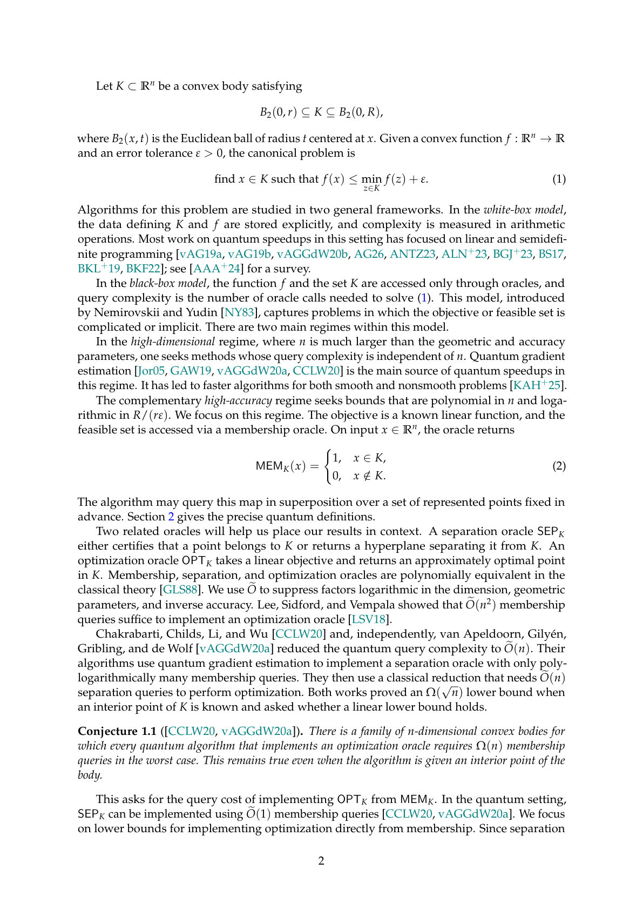
<figcaption class="paper-figure-caption"><b>Fig 1.</b> Low-resolution page preview, page 2</figcaption>
</figure>
<figure class="paper-figure-card">
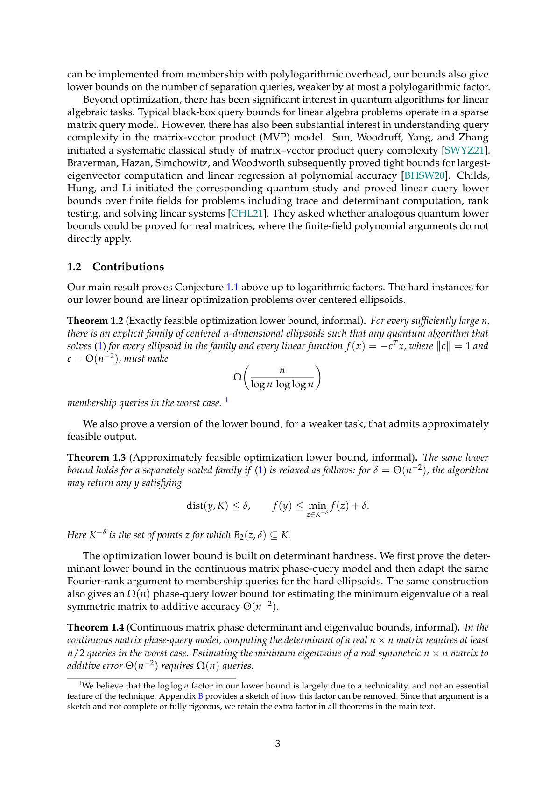
<figcaption class="paper-figure-caption"><b>Fig 2.</b> Low-resolution page preview, page 3</figcaption>
</figure>
<figure class="paper-figure-card">
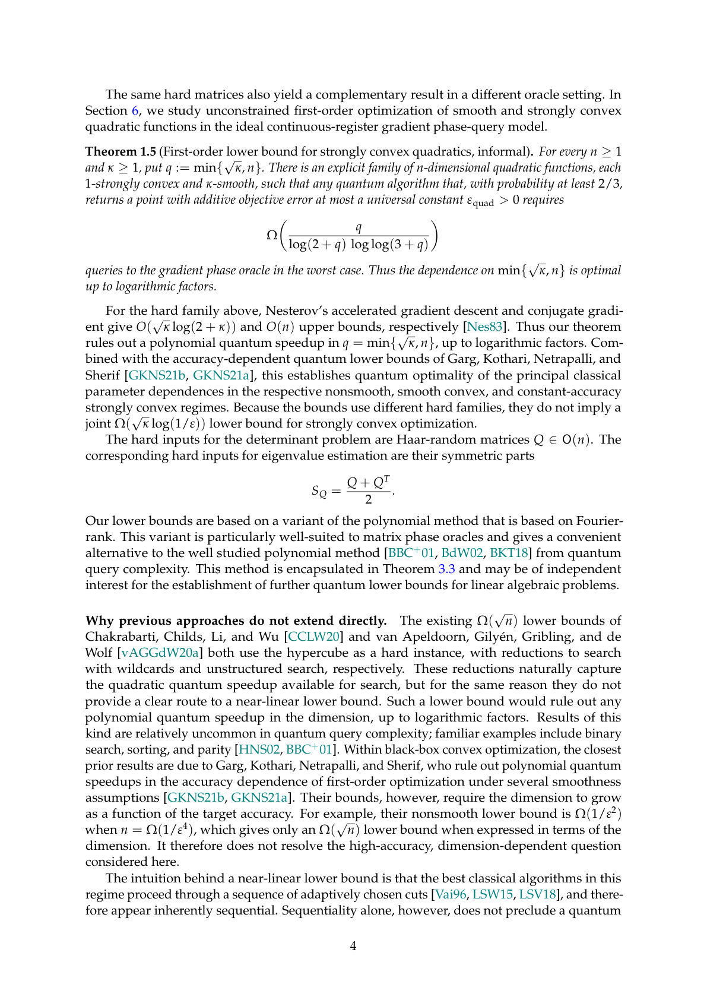
<figcaption class="paper-figure-caption"><b>Fig 3.</b> Low-resolution page preview, page 4</figcaption>
</figure>
<figure class="paper-figure-card">
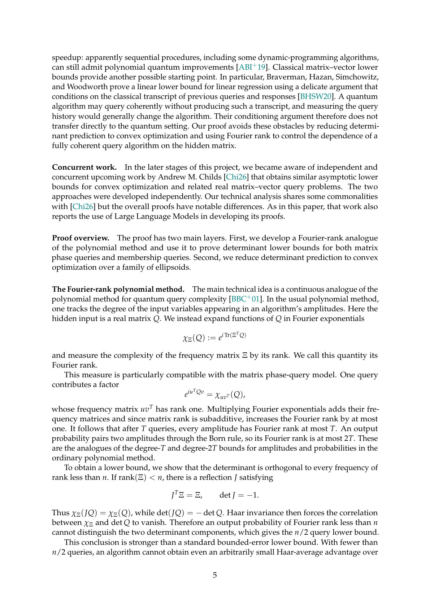
<figcaption class="paper-figure-caption"><b>Fig 4.</b> Low-resolution page preview, page 5</figcaption>
</figure>
<figure class="paper-figure-card">
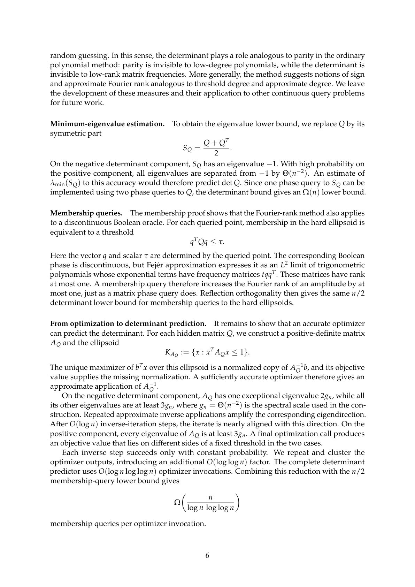
<figcaption class="paper-figure-caption"><b>Fig 5.</b> Low-resolution page preview, page 6</figcaption>
</figure>
</div>
<p><strong>Summary.</strong> This work establishes tight, near-optimal quantum lower bounds for solving convex optimization problems using quantum oracles. By developing a novel technique based on Fourier-rank, the authors show that solving these problems requires a query complexity scaling as $\Omega(n / \log n \log \log n)$. This resolves long-standing open questions regarding the quantum speedup for optimization.</p>
<p><strong>Why it may be interesting.</strong> The rigorous characterization of quantum query complexity for fundamental optimization problems provides deep insights into the computational power of quantum algorithms in practical settings.</p>
<details>
<summary>Detailed structure</summary>
<p><strong>Main problem.</strong> Establishing near-optimal quantum query lower bounds for high-accuracy convex optimization over explicit families of n-dimensional ellipsoids.</p>
<p><strong>Main result.</strong> The quantum query complexity for this optimization problem is characterized by a lower bound of $\Omega\left(rac{n}{\log n \log \log n}
ight)$ membership queries, up to logarithmic factors.</p>
<p><strong>Method.</strong> The proof utilizes a novel polynomial method based on Fourier-rank, which is applied to derive lower bounds for determinant computation and subsequently reduces this hardness to the convex optimization setting.</p>
<p><strong>Model / system.</strong> The model is a black-box quantum query model where the objective function and feasible set (ellipsoids) are accessed via oracles (membership, phase, or gradient).</p>
<p><strong>Key observables.</strong> Query complexity (number of oracle calls), additive objective error ($\Theta(n^{-2})$), determinant value, and minimum eigenvalue.</p>
<p><strong>Important parameters / regimes.</strong> Dimensionality ($n$), accuracy ($\epsilon$), and the condition number ($\kappa$) for gradient bounds.</p>
<p><strong>Assumptions / limitations.</strong> The lower bounds are established for specific hard families (e.g., centered ellipsoids) and the analysis relies on advanced tools from functional analysis and Fourier analysis in the continuous setting.</p>
<p><strong>Figures summary.</strong> Not specified.</p>
<p><strong>Paper structure.</strong> The paper develops the Fourier-rank based lower bound for determinant computation, applies this to membership queries for ellipsoids to solve the optimization lower bound, and separately derives gradient-query lower bounds for strongly convex functions.</p>
</details>
<details>
<summary>Abstract</summary>
<p>We establish a near-linear quantum query lower bound for high-accuracy convex optimization over an explicit family of $n$-dimensional ellipsoids. We focus on linear optimization with an explicitly given objective, where the feasible set is accessed through a membership oracle. We show that any algorithm that, for every unit linear objective, returns an exactly feasible point with additive objective error $Θ(n^{-2})$ requires $Ω\!\left(\frac{n}{\log n\,\log\log n}\right)$ membership queries. The same lower bound can be shown to hold if the returned point is only required to be approximately feasible, within $Θ(n^{-2})$ distance from the feasible set. This resolves, up to logarithmic factors, an open question posed by Chakrabarti, Childs, Li, and Wu~(\textit{Quantum}, 2020) and by van Apeldoorn, Gilyén, Gribling, and de Wolf~(\textit{Quantum}, 2020). Coupled with the upper bounds in these papers, the query complexity of high-accuracy convex optimization is characterized tightly up to logarithmic factors. The proof is built around a lower bound for determinant computation that is derived via a novel polynomial method based on Fourier-rank. In the continuous matrix phase-query model, computing the determinant of a real $n\times n$ matrix requires at least $n/2$ matrix-vector product queries. The construction also yields an $Ω(n)$ phase-query lower bound for estimating the minimum eigenvalue of a real symmetric $n\times n$ matrix to additive accuracy $Θ(n^{-2})$. These results extend the determinant and minimum-eigenvalue lower bounds of Childs, Hung, and Li~(ICALP 2021) from finite fields to the real-valued setting. Based on the same constructions, we also prove a near-optimal gradient-query lower bound for constant-accuracy optimization of smooth and strongly convex functions.</p>
</details>
<p><sub><a href="#top">↑ back to top</a></sub></p>

<p><a id="paper-2609.08998"></a></p>
<h3 id="no-information-transmission-through-quantum-channels-above-capacity"><a href="http://arxiv.org/abs/2609.08998v1">No information transmission through quantum channels above capacity</a></h3>
<p><strong>Authors:</strong> Hao-Chung Cheng, Marco Tomamichel<br>
<strong>Type:</strong> theory · <strong>Category:</strong> quantum information and computing · <strong>PDF:</strong> <a href="https://arxiv.org/pdf/2609.08998v1">https://arxiv.org/pdf/2609.08998v1</a><br>
<strong>Analysis basis:</strong> full PDF text, analyzed in chunks</p>
<div class="figure-strip-hint">↔ Scroll figures horizontally</div>
<div class="paper-figures-scroll">
<figure class="paper-figure-card">
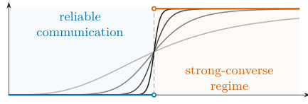
<figcaption class="paper-figure-caption"><b>Fig 1.</b> FIG. 1. The asymptotic coding transition. Darker curves represent longer codes. Direct coding theorems drive the optimal error to zero below capacity, whereas a strong converse drives it to one above capacity. The corresponding exponents quantify the approach to the limiting step. No behavior at the transition point itself is asserted.</figcaption>
</figure>
</div>
<p><strong>Summary.</strong> This paper rigorously proves exponential strong converse theorems for quantum and classical communication over arbitrary quantum channels. By utilizing integral representations of Rényi information, the authors demonstrate that any attempt to transmit information above the channel's capacity fails exponentially fast. This work provides fundamental, sharp limits on quantum information processing capabilities.</p>
<p><strong>Why it may be interesting.</strong> The rigorous characterization of capacity limits via strong converse theorems provides fundamental, non-trivial bounds on what is physically possible for information processing using quantum resources.</p>
<details>
<summary>Detailed structure</summary>
<p><strong>Main problem.</strong> The paper aims to establish an exponential strong converse theorem for information transmission through quantum channels, proving that communication rates exceeding the channel capacity fail catastrophically.</p>
<p><strong>Main result.</strong> The authors prove that at rates beyond the quantum or classical capacity, the entanglement-generation fidelity and success probability decay exponentially with the number of channel uses.</p>
<p><strong>Method.</strong> The proof adapts the classical Arimoto strategy, crucially employing integral representations of Rényi information measures to establish asymptotic continuity bounds for Rényi capacities.</p>
<p><strong>Model / system.</strong> The analysis concerns arbitrary finite-dimensional memoryless quantum channels, considering both classical and quantum information transmission protocols.</p>
<p><strong>Key observables.</strong> Capacity ($C$ or $Q$), entanglement-generation fidelity ($F_{eg}$), and the success probability for classical communication.</p>
<p><strong>Important parameters / regimes.</strong> The Rényi order ($\alpha > 1$) and the transmission rate ($r$) relative to the capacity.</p>
<p><strong>Assumptions / limitations.</strong> The core technical steps involve bounding fidelity using the sandwiched Rényi divergence and adapting the Leung–Smith telescoping argument.</p>
<p><strong>Figures summary.</strong> Figure 1 illustrates the asymptotic coding transition, distinguishing between weak converse (fixed error) and strong converse (error tending to one) behavior.</p>
<p><strong>Paper structure.</strong> The structure builds from defining the problem (strong converse) to introducing the mathematical machinery (Rényi measures, integral representations), deriving the converse bounds for both quantum and classical settings, and finally proving the equivalence of various rate bounds.</p>
</details>
<details>
<summary>Abstract</summary>
<p>We show that the capacity of a quantum channel demarcates a phase transition: while reliable transmission below capacity is always possible, any attempt to transmit information above it fails catastrophically. Specifically, we prove exponential strong converse theorems for unassisted quantum and classical communication over arbitrary finite-dimensional memoryless quantum channels. At rates beyond the respective capacity, the entanglement-generation fidelity and the success probability for classical communication decay exponentially with the number of channel uses. This rules out transmission above capacity even when one tolerates arbitrarily large errors. Our proof follows the classical Arimoto strategy, augmented by a crucial new ingredient: integral representations of Rényi information measures that lead to asymptotic continuity bounds for Rényi capacities.</p>
</details>
<p><sub><a href="#top">↑ back to top</a></sub></p>

<p><a id="paper-2609.08927"></a></p>
<h3 id="positive-temperature-coefficient-of-anisotropy-due-to-math876math-groundstate-in-math877math-femath878mathomath879math"><a href="http://arxiv.org/abs/2609.08927v1">Positive Temperature Coefficient of Anisotropy due to $d^6L$ Groundstate in $ε$-Fe$_2$O$_3$</a></h3>
<p><strong>Authors:</strong> Rachel Nickel, Kurt Kummer, Johan van Lierop<br>
<strong>Type:</strong> both · <strong>Category:</strong> strongly correlated electrons · <strong>PDF:</strong> <a href="https://arxiv.org/pdf/2609.08927v1">https://arxiv.org/pdf/2609.08927v1</a><br>
<strong>Analysis basis:</strong> full PDF text, analyzed in chunks</p>
<div class="figure-strip-hint">↔ Scroll figures horizontally</div>
<div class="paper-figures-scroll">
<figure class="paper-figure-card">
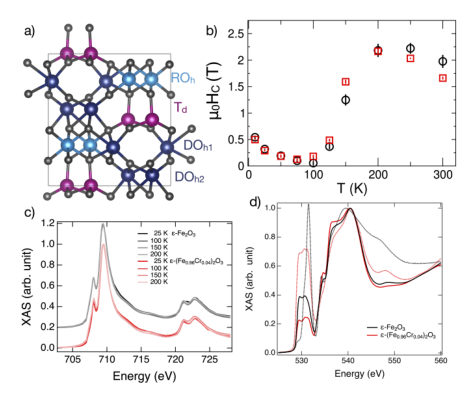
<figcaption class="paper-figure-caption"><b>Fig 1.</b> FIG. 1. a) Crystal structure of ϵ-Fe2O3. Temperature dependent b) magnetic coercivity (repro-</figcaption>
</figure>
<figure class="paper-figure-card">
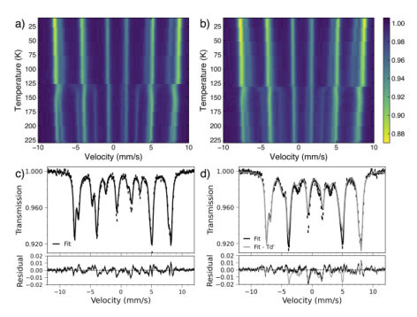
<figcaption class="paper-figure-caption"><b>Fig 2.</b> FIG. 2. Maps of temperature dependent M¨ossbauer spectra of a) ϵ-Fe2O3 and b) ϵ-</figcaption>
</figure>
<figure class="paper-figure-card">
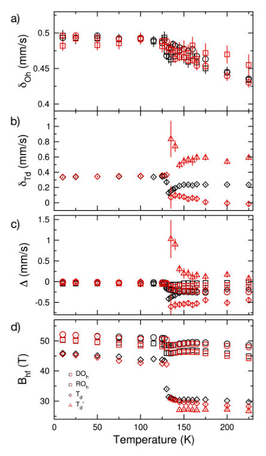
<figcaption class="paper-figure-caption"><b>Fig 3.</b> FIG. 3. Temperature dependent isomer shift (δ) of a) Oh and b) Td components, c) quadrupole</figcaption>
</figure>
<figure class="paper-figure-card">
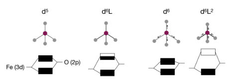
<figcaption class="paper-figure-caption"><b>Fig 4.</b> FIG. 4. Schematic of electronic coupling for different electronic configurations where filled (empty)</figcaption>
</figure>
<figure class="paper-figure-card">
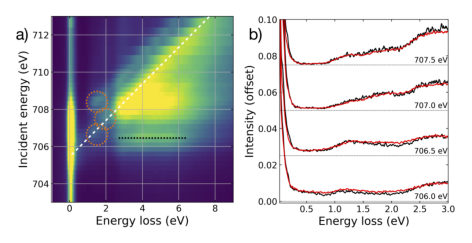
<figcaption class="paper-figure-caption"><b>Fig 5.</b> FIG. 5. a) High throughput Fe L3 RIXS map of ϵ-Fe2O3 at 300 K. Orange circles mark dd</figcaption>
</figure>
</div>
<p><strong>Summary.</strong> This paper investigates the unusual positive temperature coefficient of magnetic anisotropy in $\epsilon$-Fe$_2$O$_3$. By combining Mössbauer spectroscopy, XAS, and RIXS, the authors propose that the effect arises from a $d^6L$ groundstate stabilized by metal-ligand hybridization and bond disproportionation. This work highlights hybridization as a key mechanism for tuning magnetic properties in correlated oxide materials.</p>
<p><strong>Why it may be interesting.</strong> The work provides a detailed, multi-technique investigation into how hybridization mechanisms can induce strong spin-orbit coupling effects in transition metal oxides, which is central to understanding correlated electron physics.</p>
<details>
<summary>Detailed structure</summary>
<p><strong>Main problem.</strong> The study aims to explain the origin of a positive temperature coefficient of anisotropy ($dK/dT > 0$) in $\epsilon$-Fe$_2$O$_3$, a behavior unusual for magnetic materials.</p>
<p><strong>Main result.</strong> The positive $dK/dT$ is attributed to the stabilization of a $d^6L$ groundstate in the tetrahedral Fe sites, driven by metal-ligand hybridization and bond disproportionation.</p>
<p><strong>Method.</strong> The research combines multiple experimental techniques, including temperature-dependent Mössbauer spectroscopy, X-ray Absorption Spectroscopy (XAS), and Resonant Inelastic X-ray Scattering (RIXS).</p>
<p><strong>Model / system.</strong> The system under investigation is $\epsilon$-Fe$_2$O$_3$ and its Cr-doped counterpart, focusing on the electronic structure changes associated with different Fe local environments ($T_d$, $O_h$).</p>
<p><strong>Key observables.</strong> Temperature dependence of anisotropy ($dK/dT$), Mössbauer parameters ($\delta$, $\Delta$, $B_{hf}$), and XAS spectral weight changes.</p>
<p><strong>Important parameters / regimes.</strong> Temperature range (125-200 K), doping concentration (Cr), and the electronic configuration ($d^6L$ vs. $d^6+d^6L_2$).</p>
<p><strong>Assumptions / limitations.</strong> The analysis assumes that the unusual magnetic behavior can be mapped onto specific changes in the local electronic structure, particularly involving metal-ligand hybridization.</p>
<p><strong>Figures summary.</strong> Figures show temperature-dependent magnetic coercivity and XAS spectra for both pure and doped samples, alongside maps and plots detailing temperature-dependent hyperfine parameters and RIXS excitations.</p>
<p><strong>Paper structure.</strong> The paper progresses by first establishing the anomalous $dK/dT > 0$ behavior, then using Mössbauer and XAS to probe site-specific electronic changes upon doping, and finally employing RIXS to confirm the role of metal-ligand hybridization and bond disproportionation in stabilizing the $d^6L$ state.</p>
</details>
<details>
<summary>Abstract</summary>
<p>Positive anisotropy temperature coefficients ($dK/dT>0$) usually arise from hybridization between magnetic 3d states and strongly spin-orbit-coupled (SOC) subsystems. Yet $ε$-Fe$_2$O$_3$ shows $dK/dT>0$ (125-200~K) without an obvious SOC partner. We study pure and Cr-doped (with weakened Fe-O hybridization) $ε$-Fe$_2$O$_3$ across the transition from low temperature incommensurate to high-anisotropy magnetic phases. We identify a $d^6L$ groundstate in $ε$-Fe$_2$O$_3$ while reduced hybridization yields $d^6 + d^6L^2$ in the Cr-doped system, highlighting metal-ligand hybridization as a route to tune magnetic, electronic and orbitronic properties.</p>
</details>
<p><sub><a href="#top">↑ back to top</a></sub></p>

<p><a id="paper-2609.07945"></a></p>
<h3 id="promises-should-be-taken-seriously-on-relativization-with-promise-problems"><a href="http://arxiv.org/abs/2609.07945v1">Promises should be taken seriously: On relativization with promise problems</a></h3>
<p><strong>Authors:</strong> David Miloschewsky, Supartha Podder, Dorian Rudolph<br>
<strong>Type:</strong> theory · <strong>Category:</strong> quantum information and computing · <strong>PDF:</strong> <a href="https://arxiv.org/pdf/2609.07945v1">https://arxiv.org/pdf/2609.07945v1</a><br>
<strong>Analysis basis:</strong> full PDF text, analyzed in chunks</p>
<div class="figure-strip-hint">↔ Scroll figures horizontally</div>
<div class="paper-figures-scroll">
<figure class="paper-figure-card">
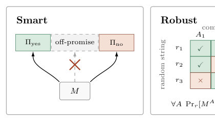
<figcaption class="paper-figure-caption"><b>Fig 1.</b> Figure 1: Three different types of oracle access to promise problems.</figcaption>
</figure>
</div>
<p><strong>Summary.</strong> This paper tackles the complex theoretical issue of how computational power changes when moving from standard language problems to promise problems, especially when using black-box oracles. The authors show that standard complexity results fail to transfer to the promise setting, establishing fundamental separations between classes like $   ext{PromiseBQP}$ and $  ext{PromiseP}$. It provides deep insights into the structure of quantum and classical complexity hierarchies under these generalized computational models.</p>
<p><strong>Why it may be interesting.</strong> While highly theoretical, the rigorous analysis of computational models and the limitations of standard complexity results (like those transferring from languages to promises) informs the fundamental limits of quantum computation, which is crucial for understanding the feasibility of quantum algorithms in physical systems.</p>
<details>
<summary>Detailed structure</summary>
<p><strong>Main problem.</strong> The paper investigates the computational differences between standard language problems and promise problems when using black-box oracle access, particularly concerning how unconstrained 'off-promise' inputs affect complexity classes.</p>
<p><strong>Main result.</strong> It demonstrates that results proven for languages do not necessarily transfer to promise problems, establishing separations like $ ext{PromiseBQP}^O 
ot\subseteq     ext{PromiseP}^O_{   ext{/poly}}$ for a specific oracle $O$. Furthermore, it establishes that $  ext{PromiseYQP}^* =     ext{PP}$ under certain assumptions.</p>
<p><strong>Method.</strong> The authors employ advanced techniques from complexity theory, defining and comparing various oracle access semantics (robust, loose) and adapting proof techniques, such as those used for the Quantum-Classical Polynomial Hierarchy, to the promise setting.</p>
<p><strong>Model / system.</strong> The model is purely theoretical, focusing on abstract computational complexity classes ($   ext{P},     ext{BQP},   ext{PP}$, etc.) and their generalizations to promise problems ($  ext{PromiseP},  ext{PromiseBQP}$). The 'oracle' represents an external computational source whose behavior is constrained by the problem's promise.</p>
<p><strong>Key observables.</strong> The primary observables are the containment and separation relationships between various complexity classes (e.g., $   ext{PromiseBQP}$ vs. $  ext{PromiseP}$).</p>
<p><strong>Important parameters / regimes.</strong> The key parameters are the definitions of oracle access semantics (robust vs. loose) and the structure of the promise sets ($\Pi_{	ext{yes}}, \Pi_{	ext{no}}$).</p>
<p><strong>Assumptions / limitations.</strong> The analysis relies on constructing specific oracles $O$ to demonstrate separations, and the results often depend on the specific definition of oracle access used (e.g., robust queries).</p>
<p><strong>Figures summary.</strong> Figure 1 illustrates the three types of oracle access (Smart, Robust, Loose) to promise problems, comparing the required success probabilities for different query types.</p>
<p><strong>Paper structure.</strong> The paper proceeds by first establishing the necessity of defining oracle access carefully (Observation 1.1). It then proves separations between language and promise settings (Result 1), improves bounds on the Quantum-Classical Polynomial Hierarchy using loose access (Result 2), and finally establishes relationships between specialized promise classes like $   ext{PromiseYQP}^<em>$ and $    ext{PromisePostBQP}^</em>$ (Result 3).</p>
</details>
<details>
<summary>Abstract</summary>
<p>Relativization is concerned with comparing computational models with black-box access to an oracle. For promise problems, black-box access is not canonical due to inputs outside of the promise being unconstrained. We study two semantics for such access. Under robust queries, a machine must correctly answer regardless of the completion of the problem,, while loose access requires that the internal choices of a machine do not change based on off-promise queries.   Our first result separates the language and promise settings. Namely, we construct an oracle $O$ such that $\mathsf{P}^O = \mathsf{BQP}^O = \mathsf{AWPP}^O$, but $\mathsf{PromiseBQP}^O\not\subseteq\mathsf{PromiseP}^O_{\mathsf{/poly}}$. In particular, $\mathsf{BPP}^O = \mathsf{BQP}^O$, but $\mathsf{PromiseBQP}^O \neq \mathsf{PromiseBPP}^O$, showing that results for languages need not transfer to promises. Next, we use loose queries to strengthen the upper bound on the Quantum-Classical Polynomial Hierarchy from $\mathsf{P}^{\mathsf{PP}^{\mathsf{PP}}}$ to $\mathsf{QCPH} \subseteq \mathsf{BP\cdot PP} \subseteq \mathsf{PromiseBPP}^{\mathsf{PP}}$. The same proof also shows $\mathsf{PP}^\mathsf{PromiseBQP} = \mathsf{PP}$. Additionally, we show that $\mathsf{PromiseBQP}$, even when given quantum advice, is self-low under robust queries. Finally, we exhibit an obstruction to transferring language-level counting results to promise classes. Although $\mathsf{AWPP}$ and $\mathsf{APP}$ are low for $\mathsf{PP}$, a corresponding promise analogue would collapse the counting hierarchy as $\mathsf{GapP} \subseteq \mathsf{FP}^{\mathsf{PromiseAWPP}}$. This motivates the introduction of $\mathsf{PromisePostBQP^*}$, which restricts $\mathsf{PostBQP}$ to input-indepencent postselection. By showing that it is low for \PP, we obtain $\mathsf{PP}^{\mathsf{PromiseYQP^*}} = \mathsf{PP}$.</p>
</details>
<p><sub><a href="#top">↑ back to top</a></sub></p>

<p><a id="paper-2609.07869"></a></p>
<h3 id="quantifying-margenau-hill-nonclassicality"><a href="http://arxiv.org/abs/2609.07869v1">Quantifying Margenau--Hill Nonclassicality</a></h3>
<p><strong>Authors:</strong> Sudip Chakrabarty<br>
<strong>Type:</strong> theory · <strong>Category:</strong> other · <strong>PDF:</strong> <a href="https://arxiv.org/pdf/2609.07869v1">https://arxiv.org/pdf/2609.07869v1</a><br>
<strong>Analysis basis:</strong> full PDF text, analyzed in chunks</p>
<div class="figure-strip-hint">↔ Scroll figures horizontally</div>
<div class="paper-figures-scroll">
<figure class="paper-figure-card">
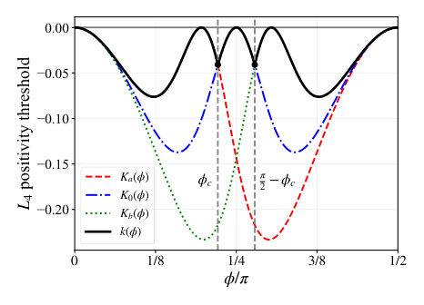
<figcaption class="paper-figure-caption"><b>Fig 1.</b> FIG. 1: The solid black curve k(ϕ) denotes the optimal threshold as a function of the angle ϕ ∈[0, π/2] between the Bloch vectors of the observables A and B. The dashed red, dash-dotted blue, and dotted green curves represent the branches Ka(ϕ), K0(ϕ), and Kb(ϕ), respectively. The black points and vertical dashed lines mark the transition points ϕ = ϕc and ϕ = π/2 −ϕc, at which the optimal strategy switches from the Ka to the K0 branch, and from the K0 to the Kb branch, respectively.</figcaption>
</figure>
<figure class="paper-figure-card">
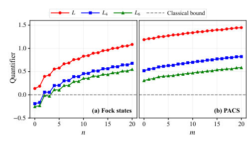
<figcaption class="paper-figure-caption"><b>Fig 2.</b> FIG. 2: Comparison of the logarithmic MHQ negativity L and the moment-based lower bounds L4 and L6 for (a) Fock states and (b) photon-added coherent states (for α = 2) for the parameter ranges considered. The inequalities L ≥L4 ≥L6 hold throughout the dis- played ranges, illustrating that the fourth-moment bound provides a tighter estimate than the sixth-moment bound. The observed depen- dence on the excitation number is numerical and is not asserted as a general monotonicity property.</figcaption>
</figure>
<figure class="paper-figure-card">
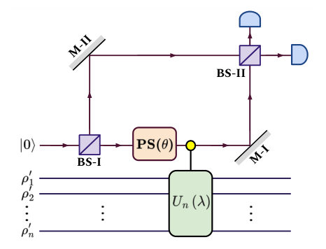
<figcaption class="paper-figure-caption"><b>Fig 3.</b> FIG. 3: Ancilla-assisted interferometric estimation of the character- istic function χn(λ) = Tr[eiλMA,B n ρ⊗n]. The path degree of freedom controls the unitary eiλMA,B n acting on n copies of the state. Measure- ments at two relative phases, θ = 0 and θ = π/2, yield the real and imaginary parts of χn(λ), respectively. The MHQ moment mn is ob- tained from the derivative of the imaginary part at λ →0, rather than from the visibility alone.</figcaption>
</figure>
<figure class="paper-figure-card">
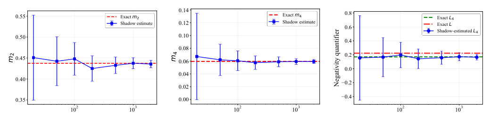
<figcaption class="paper-figure-caption"><b>Fig 4.</b> FIG. 4: Nonlinear classical-shadow estimation for the qubit state and measurement pair in Eq. (134). Panels (a) and (b) show the U-statistic estimates of the second and fourth MHQ moments, respectively. Panel (c) shows the plug-in estimate bL4 = 3</figcaption>
</figure>
</div>
<p><strong>Summary.</strong> This paper develops a moment-based methodology to quantify the nonclassicality of quantum states using the Margenau--Hill quasiprobability distribution. By focusing on low-order moments rather than full distribution reconstruction, the authors establish a hierarchy of rigorous lower bounds for the negativity. This provides a practical, experimentally accessible framework for characterizing quantum features.</p>
<p><strong>Why it may be interesting.</strong> This work provides a powerful, measurable, and computationally tractable diagnostic tool (moment-based) to quantify nonclassical features of quantum states, which is highly relevant for characterizing quantum resources in open quantum systems.</p>
<details>
<summary>Detailed structure</summary>
<p><strong>Main problem.</strong> The paper aims to quantify the nonclassicality associated with the Margenau--Hill quasiprobability (MHQ) distribution without needing to reconstruct the full distribution.</p>
<p><strong>Main result.</strong> A moment-based framework is established, yielding a hierarchy of rigorous lower bounds for the MHQ negativity, with the fourth-moment bound being the strongest among even-moment bounds.</p>
<p><strong>Method.</strong> The authors utilize the moments (both standard and absolute) of the MHQ distribution, deriving lower bounds for the negativity using techniques related to R\'enyi entropy and moment-matrix conditions.</p>
<p><strong>Model / system.</strong> The study concerns quantum states ($
ho$) on a $d$-dimensional Hilbert space, specifically analyzing the MHQ distribution derived from two observables, $A$ and $B$, defined by spectral projectors.</p>
<p><strong>Key observables.</strong> Logarithmic MHQ negativity, low-order moments ($m_n, e_n$), and the moment-matrix condition for positivity.</p>
<p><strong>Important parameters / regimes.</strong> The order of the moment ($r$ or $2n$), and the dimensionality of the Hilbert space ($d$).</p>
<p><strong>Assumptions / limitations.</strong> The approach assumes that the relevant moments admit exact multi-copy representations, allowing estimation via interferometry or classical shadow techniques.</p>
<p><strong>Paper structure.</strong> The paper first introduces the MHQ distribution and the concept of nonclassicality via its negativity. It then develops the moment-based quantification, deriving the lower bound hierarchy, and finally applies these results to qubits to find tight bounds and optimal thresholds.</p>
</details>
<details>
<summary>Abstract</summary>
<p>Quasiprobability distributions offer a useful way of describing nonclassical features of quantum systems through their departure from classical probability theory. In this work, we investigate the quantification of nonclassicality associated with the Margenau--Hill quasiprobability (MHQ) distribution using its moments, without requiring reconstruction of the full distribution. First we introduce the logarithmic MHQ negativity as a quantifier of nonclassicality, and then derive a hierarchy of rigorous lower bounds in terms of low-order moments. Within the resulting hierarchy, the fourth-moment bound is the strongest among the bounds based on even moments. For qubits, we further derive a tight upper bound on the exact MHQ negativity and identify the corresponding extremal state. We also obtain an optimal positivity threshold based on the fourth moment for arbitrary pairs of qubit observables. Finally, we show that the relevant moments admit exact multicopy representations, providing a route to their estimation using interferometry or classical shadow techniques. Our results establish a moment-based framework for extracting quantitative information about MHQ negativity from a finite set of low-order observables.</p>
</details>
<p><sub><a href="#top">↑ back to top</a></sub></p>

<p><a id="paper-2609.07972"></a></p>
<h3 id="quantum-wavefunction-augmentation-via-variational-autoencoders"><a href="http://arxiv.org/abs/2609.07972v1">Quantum Wavefunction Augmentation via Variational Autoencoders</a></h3>
<p><strong>Authors:</strong> Sonaldeep Halder, Chayan Patra, Rahul Maitra<br>
<strong>Type:</strong> theory · <strong>Category:</strong> strongly correlated electrons · <strong>PDF:</strong> <a href="https://arxiv.org/pdf/2609.07972v1">https://arxiv.org/pdf/2609.07972v1</a><br>
<strong>Analysis basis:</strong> full PDF text, analyzed in chunks</p>
<div class="figure-strip-hint">↔ Scroll figures horizontally</div>
<div class="paper-figures-scroll">
<figure class="paper-figure-card">
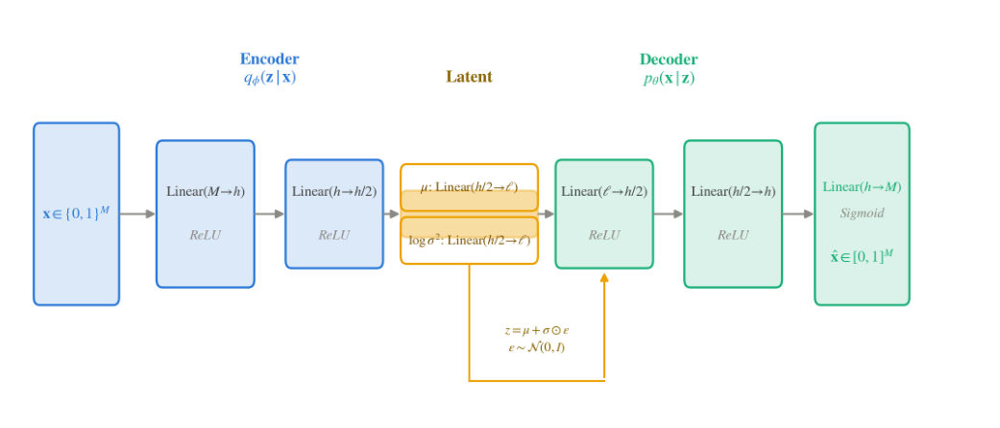
<figcaption class="paper-figure-caption"><b>Fig 1.</b> FIG. 1. Architecture of the VAE used to propose new Slater determinants. Each Linear(A →B) block is a fully-connected neural network layer, y = Wx + b for a trainable weight matrix W and bias b, mapping an A-dimensional input to a B- dimensional output; Linear layers are followed by a ReLU (rectified linear unit) nonlinearity, f(x) = max(0, x). The encoder qϕ(z | x) passes x ∈{0, 1}M (M = qubit count of the target system, Table I) through two Linear+ReLU layers to a hidden representation of width h, then splits into two parallel Linear heads producing the mean µ and log-variance log σ2 of the approximate posterior. A latent sample is drawn via the reparameterization trick, z = µ + σ ⊙ϵ with...</figcaption>
</figure>
<figure class="paper-figure-card">
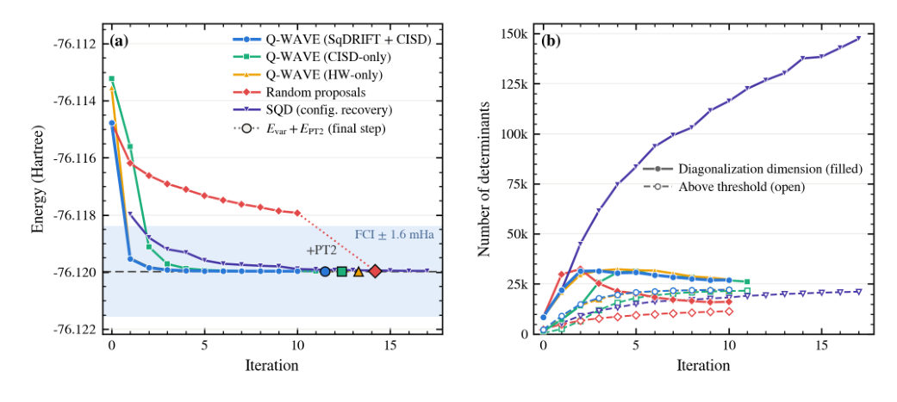
<figcaption class="paper-figure-caption"><b>Fig 2.</b> FIG. 2. (a) Ground-state energy of H2O (6-31G, equilibrium) versus iteration for the five selection strategies. Iteration 0 denotes the initial basis D(0), prior to any generative expansion. The shaded band marks chemical accuracy (±1.6 mHa) around FCI (dashed line); the black-edged symbols beyond the final iteration show each method’s energy after the semistochastic PT2 correction, drawn as one additional step on its own trajectory. SQD does not receive a PT2 step. (b) Subspace sizes: filled symbols with solid lines show the diagonalization dimension; open symbols with dashed lines show the number of determinants above the selection threshold ϵthresh = 10−10.</figcaption>
</figure>
<figure class="paper-figure-card">
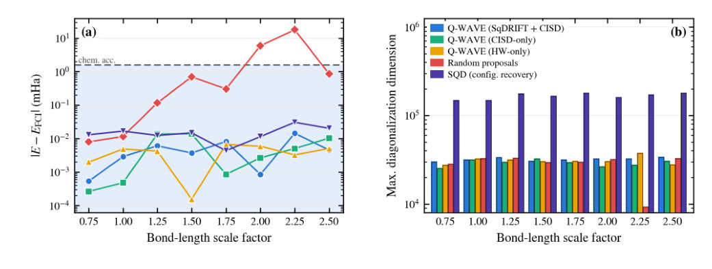
<figcaption class="paper-figure-caption"><b>Fig 3.</b> FIG. 3. Potential energy surface of H2O (6-31G, symmetric O–H stretch), compared across all five selection strategies (color/marker key in panel (b), shared with panel (a)). Bond-length scale factor of 1.00 represents the equilibrium geometry and the other scales are factors by which both O–H bonds are stretched. (a) Absolute energy error |E −EFCI| (log scale) at each geometry, using each method’s final reported energy (Evar + EP T 2). SQD has no PT2 correction. The chemical-accuracy threshold (1.6 mHa) is marked by the dashed line, with the region below it shaded. (b) Maximal diagonalization dimension reached by each method at each geometry, shown as grouped bars on a log scale.</figcaption>
</figure>
<figure class="paper-figure-card">
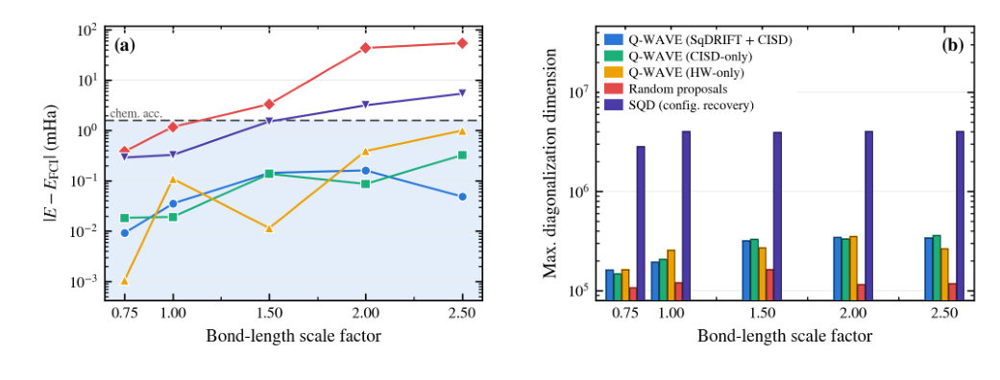
<figcaption class="paper-figure-caption"><b>Fig 4.</b> FIG. 4. Potential energy surface for N2 (6-31G), compared across all five selection strategies (color/marker key in panel (b), shared with panel (a)). Bond-length scale factor of 1.00 represents the equilibrium geometry and the other scales are factors by which N–N bond is stretched. (a) Absolute energy error |E −EFCI|(log scale) at each geometry, using each method’s final reported energy (Evar + EP T 2). SQD has no PT2 correction. The chemical-accuracy threshold (1.6 mHa) is marked by the dashed line, with the region below it shaded; the three Q-WAVE variants remain within or close to this band at every geometry, while random proposals and SQD grow substantially worse as the bond is...</figcaption>
</figure>
<figure class="paper-figure-card">
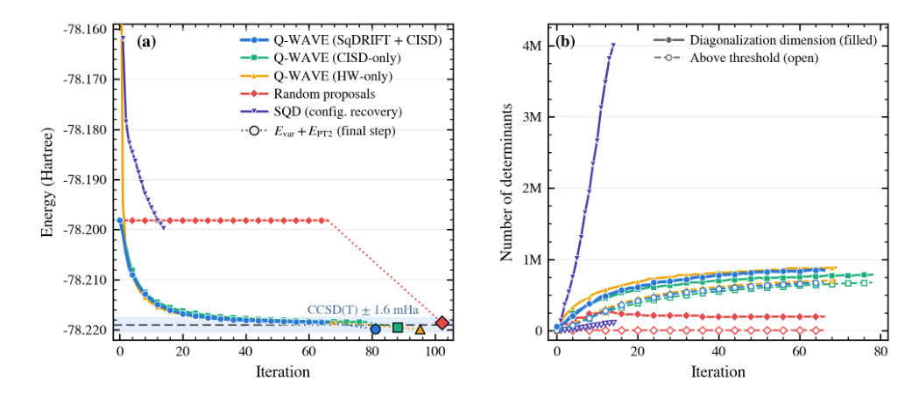
<figcaption class="paper-figure-caption"><b>Fig 5.</b> FIG. 5. (a) Ground-state energy of all-electron C2H4 (6-31G; rC=C = 1.339 Å, rC–H = 1.086 Å, ∠HCH = 117.6◦, ∠HCC = 121.2◦) versus iteration for the five selection strategies, referenced to CCSD(T). The shaded band marks chemical accuracy (±1.6 mHa) around CCSD(T) (dashed line); black-edged symbols beyond the final iteration show each method’s energy after the semistochastic PT2 correction, drawn as one additional step on its own trajectory. SQD does not receive a PT2 step: its configuration-recovery iterations saturate the 4×106-determinant cap while stalling 17 mHa above CCSD(T), whereas all three Q-WAVE variants converge into the CCSD(T) band with a roughly five-fold smaller basis. (b)...</figcaption>
</figure>
</div>
<p><strong>Summary.</strong> This paper introduces Q-WAVE, a novel hybrid quantum-machine learning method designed to calculate accurate ground-state wavefunctions for strongly correlated molecules. It combines limited quantum circuit sampling with CISD information, using a Variational Autoencoder to intelligently augment the basis set. The approach demonstrates state-of-the-art accuracy and scalability on challenging systems like $    ext{Cr}_2$.</p>
<p><strong>Why it may be interesting.</strong> This work is highly relevant as it proposes a machine learning-driven pathway to overcome the exponential scaling bottleneck in quantum chemistry, offering a scalable alternative to pure quantum simulation for complex molecular systems.</p>
<details>
<summary>Detailed structure</summary>
<p><strong>Main problem.</strong> Accurately computing the ground-state wavefunction for many-body systems, particularly in strongly correlated regimes where the required determinant space exceeds the capacity of finite quantum sampling.</p>
<p><strong>Main result.</strong> The proposed Q-WAVE method achieves sub-millihartree accuracy for $    ext{H}_2    ext{O}$ and $   ext{N}_2$ dissociation and demonstrates chemical accuracy for a 60-qubit $  ext{Cr}_2$ system, surpassing standard quantum sampling techniques.</p>
<p><strong>Method.</strong> It introduces Q-WAVE, a hybrid approach combining determinants sampled via SqDRIFT Krylov circuits and CISD determinants, which are then used to train a $eta$-annealed Variational Autoencoder (VAE) to generate the full wavefunction support structure in a continuous latent space.</p>
<p><strong>Model / system.</strong> The work applies to molecular Hamiltonians (e.g., $ ext{H}_2    ext{O}$, $  ext{N}_2$, ethylene, $  ext{Cr}_2$) by representing the electronic state via Slater determinants. The core computational challenge is managing the exponentially large Hilbert space in strongly correlated regimes.</p>
<p><strong>Key observables.</strong> Ground-state energies, wavefunction support structure, and comparison against full CI and $    ext{CCSD}(  ext{T})$ benchmarks.</p>
<p><strong>Important parameters / regimes.</strong> The method relies on the VAE's latent space exploration, the initial seed from CISD, and the quantum sampling fidelity from SqDRIFT circuits.</p>
<p><strong>Assumptions / limitations.</strong> The method assumes that the wavefunction's structure can be effectively learned and augmented by mapping sampled determinants into a continuous latent space via the VAE.</p>
<p><strong>Figures summary.</strong> Table V summarizes final energies and subspace sizes for representative systems ($ ext{H}_2    ext{O}$, $  ext{N}_2$, $    ext{C}_2    ext{H}_4$, $    ext{Cr}_2$), comparing Q-WAVE results against other established methods.</p>
<p><strong>Paper structure.</strong> The paper first identifies the limitations of existing quantum and classical methods for strongly correlated systems. It then details the Q-WAVE framework, combining hardware sampling (SqDRIFT) with deterministic seeds (CISD) and using a $eta$-annealed VAE for iterative, generative expansion of the variational basis. Finally, it presents benchmark results on various molecules.</p>
</details>
<details>
<summary>Abstract</summary>
<p>Sample-based quantum diagonalization (SQD) has emerged as a promising route for quantum-centric supercomputing, relying on classical diagonalization of the molecular Hamiltonian within a hardware-sampled determinant subspace. However, its accuracy degrades in strongly correlated regimes where the relevant determinant space exceeds what finite-shot sampling can capture. In this work, we introduce Quantum Wavefunction Augmentation via Variational Autoencoders (Q-WAVE), a hybrid method that combines determinants sampled via SqDRIFT Krylov circuits and configuration interaction singles and doubles (CISD) determinants with generative machine learning. Using a custom $β$-annealed variational autoencoder (VAE) model, Q-WAVE iteratively expands this basis toward the variational ground state. The VAE learns the wavefunction's primary support structure from the combined hardware and CISD seed in a continuous latent space, generating new dominant determinants beyond any fixed excitation hierarchy. The resulting compact wavefunction exceeds what can be extracted from raw hardware samples alone. We demonstrate sub-millihartree accuracy compared to full configuration interaction for $\text{H}_2\text{O}$ and $\text{N}_2$ dissociation. Finally, we establish Q-WAVE's scalability on a 52-qubit ethylene system (achieving sub-millihartree accuracy versus CCSD(T)) and a highly correlated 60-qubit $\text{Cr}_2$ stress test that attains chemical accuracy upon a final perturbative correction.</p>
</details>
<p><sub><a href="#top">↑ back to top</a></sub></p>

<p><a id="paper-2609.08076"></a></p>
<h3 id="selective-coupling-of-high-order-phonons-in-la2-xsrxcuo4"><a href="http://arxiv.org/abs/2609.08076v1">Selective coupling of high-order phonons in La2-xSrxCuO4</a></h3>
<p><strong>Authors:</strong> Ke-Jun Xu, Paulina Majchrzak, Nathan Giles-Donovan, Sangheon Kim, Jaewon Choi, Jun Okamoto, Ganesha Channagowdra, Hsiao-Yu Huang, Di-Jing Huang, Seiki Komiya, Takao Sasagawa, Shuichi Wakimoto, Wei-Sheng Lee, Zhi-Xun Shen, Thomas P. Devereaux, Dung-Hai Lee, Robert J. Birgeneau<br>
<strong>Type:</strong> experiment · <strong>Category:</strong> strongly correlated electrons · <strong>PDF:</strong> <a href="https://arxiv.org/pdf/2609.08076v1">https://arxiv.org/pdf/2609.08076v1</a><br>
<strong>Analysis basis:</strong> full PDF text, analyzed in chunks</p>
<div class="figure-strip-hint">↔ Scroll figures horizontally</div>
<div class="paper-figures-scroll">
<figure class="paper-figure-card">
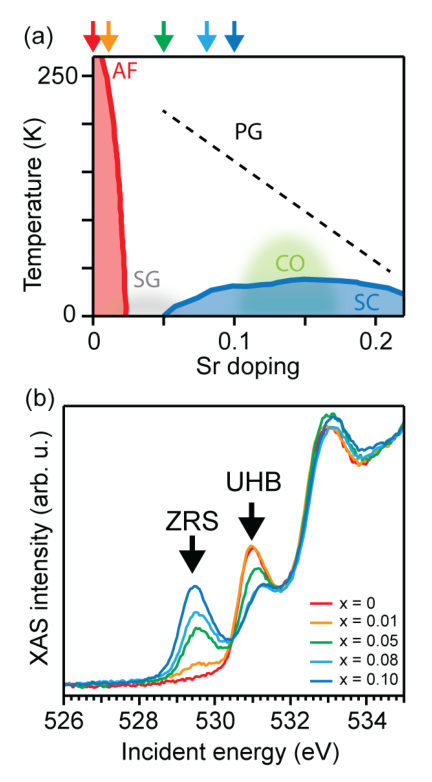
<figcaption class="paper-figure-caption"><b>Fig 1.</b> FIG. 1. X-ray absorption spectroscopy at the O K-edge for LSCO. (a) Temperature-doping phase diagram of LSCO. Blue region indicates superconductivity (SC), red region indicates long-ranged antiferromagnetism (AF), grey region indicates spin glass (SG), green region indicates charge order (CO). Black dashed line and grey data points indicates the approx- imate boundary of the pseudogap (PG) phase. Arrows at the top of the panel indicates the dopings used for the RIXS mea- surements. (b) X-ray absorption spectra at the O K-edge for the dopings indicated by the colored labels. ZRS indicates the Zhang-Rice singlet states, and UHB indicates the upper Hubbard band states. The measurements were...</figcaption>
</figure>
<figure class="paper-figure-card">
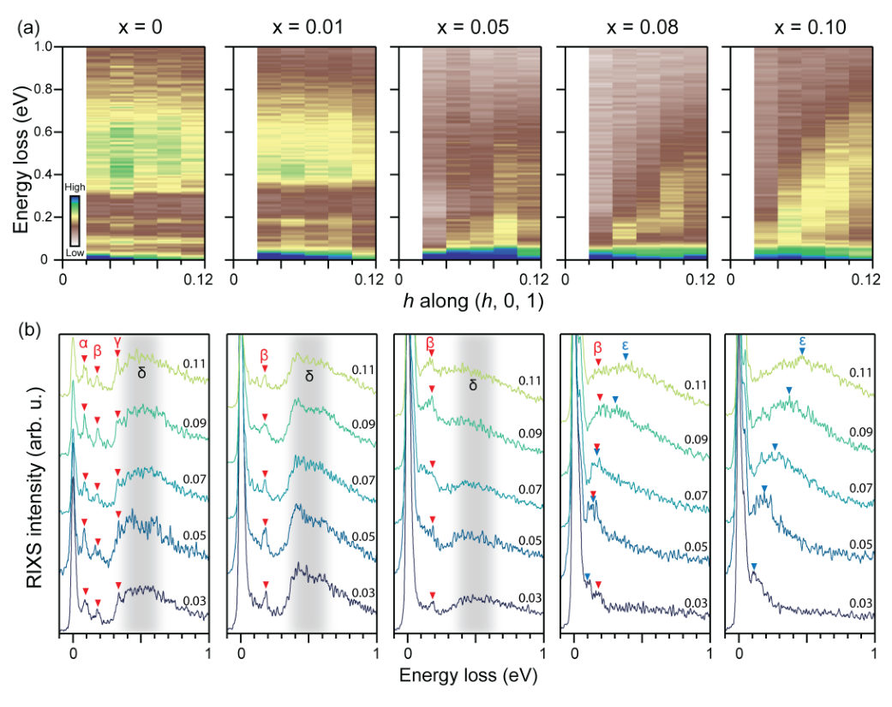
<figcaption class="paper-figure-caption"><b>Fig 2.</b> FIG. 2. Doping and momentum dependences of low energy excitations in LSCO. (a) Color image of the RIXS spectra as a function of energy loss and in-plane momentum h along (h, 0, 1) for dopings indicated above each panel. (b) RIXS energy distribution curves for respective dopings as in (a). Numbers next to each curve indicate the in-plane momentum h along (h, 0, 1). Greek letters are assigned for each distinct feature. α, β, and γ peaks (red markers) highlight the sharp low energy lattice excitations. The δ feature (grey shaded region) highlights the broad excitation around 400 to 600 meV. ϵ peaks (blue markers) highlight the dispersive excitation in x = 0.08 and x = 0.1 samples. In the x =...</figcaption>
</figure>
<figure class="paper-figure-card">
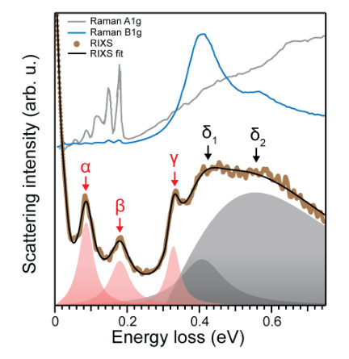
<figcaption class="paper-figure-caption"><b>Fig 3.</b> FIG. 3. Comparison of momentum-integrated RIXS spec- trum with Raman spectra. Brown dots are the raw RIXS energy distribution curve for integrated momentum between h = 0.03 to h = 0.11 along (h, 0 , 1). Black line is the over- all fit, comprised of an elastic line (not shown), a low energy antilorentzian for capturing the low energy phonons that are not individually resolved (not shown), four antilorentzians for the α, β, γ, and δ1, and another antilorentzian where the zero is not fixed for the δ2 feature. The grey curve is the Raman spectrum in the A1g channel and the blue curve is the Raman spectrum in the B1g channel, both from ref [17].</figcaption>
</figure>
</div>
<p><strong>Summary.</strong> This experimental work uses Resonant Inelastic X-ray Scattering to probe high-order phonon excitations in the cuprate superconductor La2-xSr_xCuO4. The findings reveal selective coupling to even-ordered phonons, which deviates from simple theoretical expectations. This suggests exotic electronic behavior, potentially involving locally paired quasiparticles, that influences the superconducting state.</p>
<p><strong>Why it may be interesting.</strong> The investigation into high-order phonon coupling and its selective nature provides crucial experimental constraints on theoretical models of pairing mechanisms in high-Tc superconductors, which are central to strongly correlated electron physics.</p>
<details>
<summary>Detailed structure</summary>
<p><strong>Main problem.</strong> The study aims to uncover a new regime of electron-phonon coupling in the cuprate superconductor La2-xSr_xCuO4 by analyzing high-order phonon excitations.</p>
<p><strong>Main result.</strong> The researchers observed sharp, non-dispersive peaks corresponding to two-phonon and four-phonon excitations, suggesting anomalous electron-phonon coupling beyond the standard Franck-Condon picture.</p>
<p><strong>Method.</strong> The primary method employed was Resonant Inelastic X-ray Scattering (RIXS) at the O K-edge, complemented by comparison with Raman spectroscopy.</p>
<p><strong>Model / system.</strong> The physical system is La2-xSr_xCuO4, a prototypical p-type cuprate superconductor. The analysis focuses on the coupling between charge carriers and lattice vibrations, particularly the in-plane Cu-O bond stretching mode.</p>
<p><strong>Key observables.</strong> Phonon excitation energies (e.g., 85 meV, 180 meV, 330 meV), doping dependence of these excitations, and the comparison of RIXS spectra to Raman spectra.</p>
<p><strong>Important parameters / regimes.</strong> Hole doping concentration (x), which dictates the electronic state, and the energy scale of the phonon modes.</p>
<p><strong>Assumptions / limitations.</strong> The anomalous coupling suggests possibilities like the existence of locally paired quasiparticles or bipolarons, moving beyond simple harmonic oscillator models.</p>
<p><strong>Figures summary.</strong> Figures show X-ray absorption spectra identifying electronic bands (UHB, ZRS) and RIXS color plots mapping low-energy excitations versus momentum for various dopings, contrasting with Raman spectra.</p>
<p><strong>Paper structure.</strong> The paper systematically presents RIXS measurements across different doping levels, identifying specific phonon features ($\alpha, eta, \gamma$) and tracking their evolution. It compares these findings to established Raman data to argue for an anomalous coupling mechanism.</p>
</details>
<details>
<summary>Abstract</summary>
<p>In crystals and molecules with strong coupling between the charge carriers and atomic vibrations, high order harmonics of the vibrational excitations can be observed with intensity following the Franck-Condon envelope. Here, we uncover a new regime of electron-phonon coupling in La2-xSrxCuO4 using resonant inelastic X-ray scattering. In the undoped compound, we find sharp peaks at approximately 85$\pm$5 meV, 180$\pm$7 meV, and 330$\pm$5 meV with no observable dispersion, and an absence of appreciable intensity from other modes observed in Raman spectroscopy in this energy range. The 180 meV and 330 meV excitations have energies approximately consistent with two-phonon and four-phonon in-plane Cu-O bond stretching mode, suggesting that the resonantly excited valence electrons strongly couple to this mode. These excitations exhibit significant doping dependence, eventually becoming unresolvable at 10% hole doping, where the low energy charge excitations are dominated by dispersive plasmons. The observation of selective coupling to even-ordered phonons and stark contrast with the Raman spectra indicate anomalous electron-phonon coupling beyond the Franck-Condon picture. One intriguing possibility is the existence of locally paired quasiparticles in insulating cuprates.</p>
</details>
<p><sub><a href="#top">↑ back to top</a></sub></p>

<p><a id="paper-2609.09033"></a></p>
<h3 id="semidefinite-extension-complexity-of-the-separable-set-with-applications-to-approximate-disentanglers"><a href="http://arxiv.org/abs/2609.09033v1">Semidefinite extension complexity of the separable set, with applications to approximate disentanglers</a></h3>
<p><strong>Authors:</strong> Sevag Gharibian, Carsten Hecht, Dorian Rudolph<br>
<strong>Type:</strong> theory · <strong>Category:</strong> quantum information and computing · <strong>PDF:</strong> <a href="https://arxiv.org/pdf/2609.09033v1">https://arxiv.org/pdf/2609.09033v1</a><br>
<strong>Analysis basis:</strong> full PDF text, analyzed in chunks</p>
<div class="figure-strip-hint">↔ Scroll figures horizontally</div>
<div class="paper-figures-scroll">
<figure class="paper-figure-card">
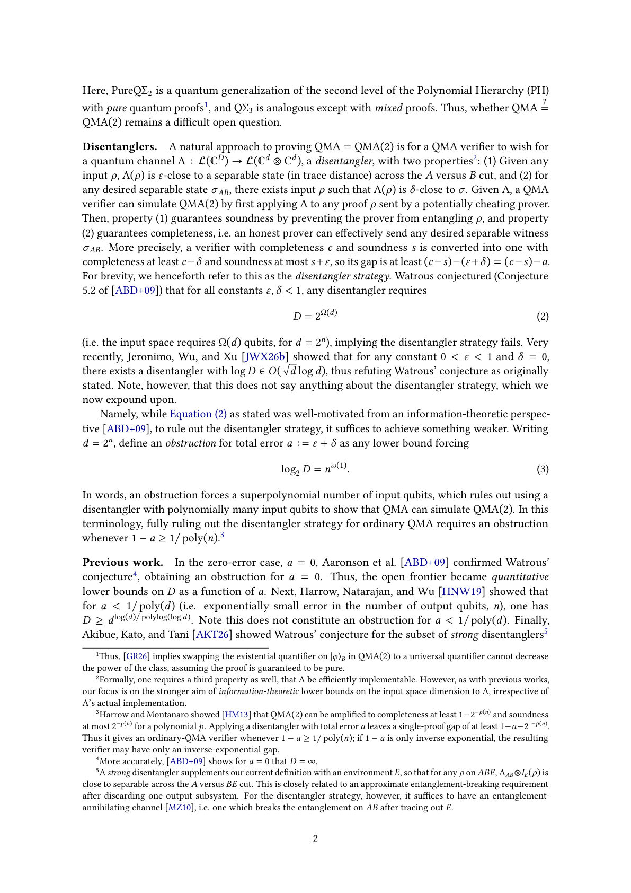
<figcaption class="paper-figure-caption"><b>Fig 1.</b> Low-resolution page preview, page 2</figcaption>
</figure>
<figure class="paper-figure-card">
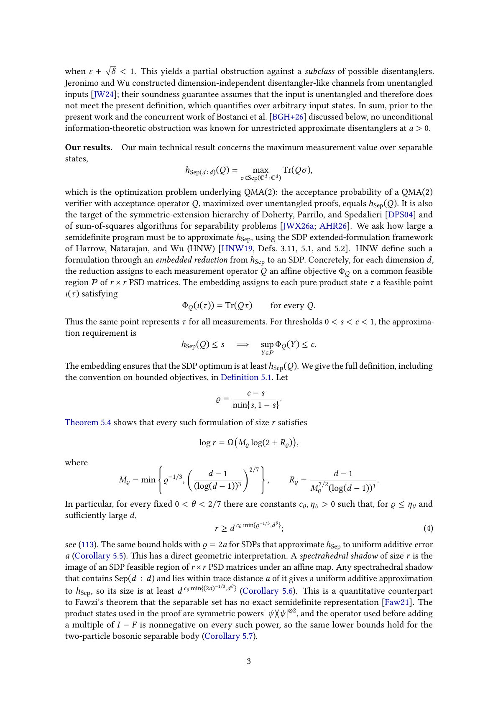
<figcaption class="paper-figure-caption"><b>Fig 2.</b> Low-resolution page preview, page 3</figcaption>
</figure>
<figure class="paper-figure-card">
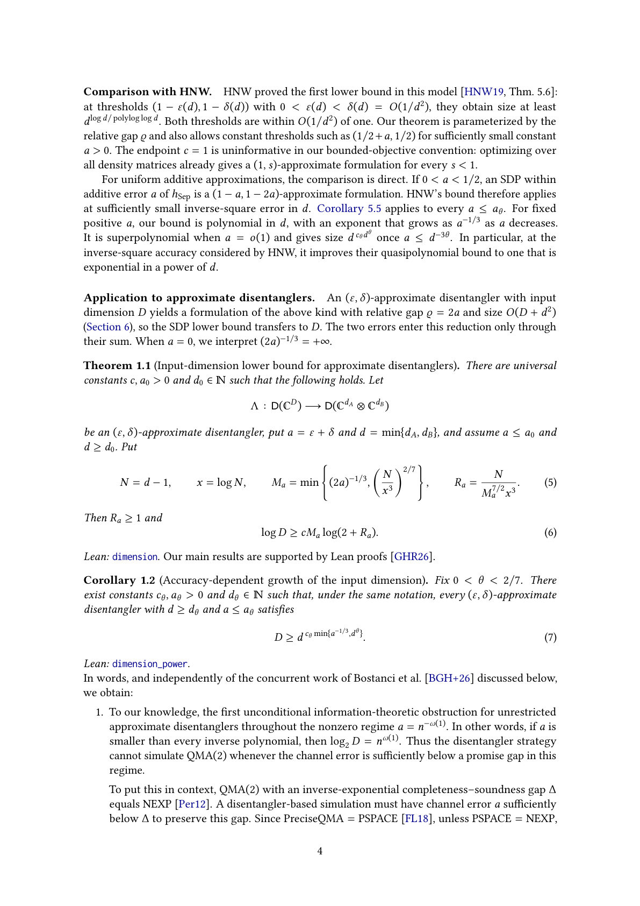
<figcaption class="paper-figure-caption"><b>Fig 3.</b> Low-resolution page preview, page 4</figcaption>
</figure>
<figure class="paper-figure-card">
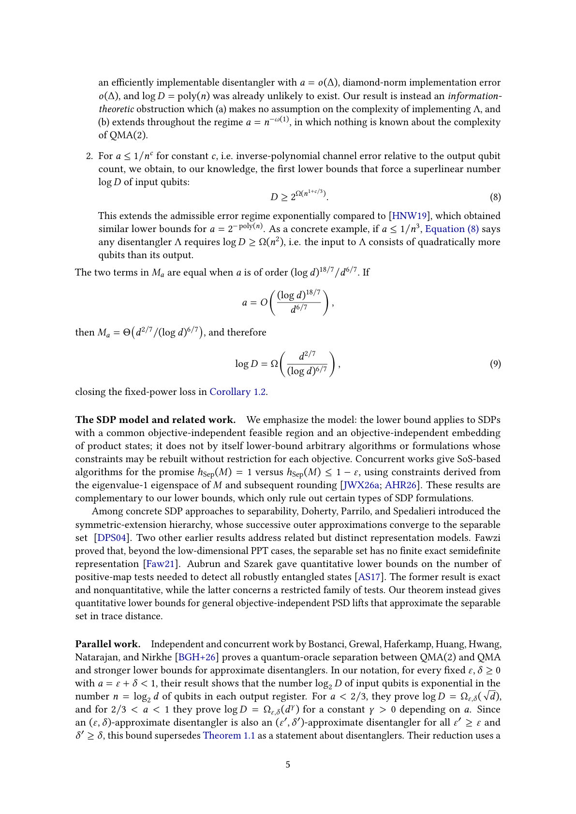
<figcaption class="paper-figure-caption"><b>Fig 4.</b> Low-resolution page preview, page 5</figcaption>
</figure>
<figure class="paper-figure-card">
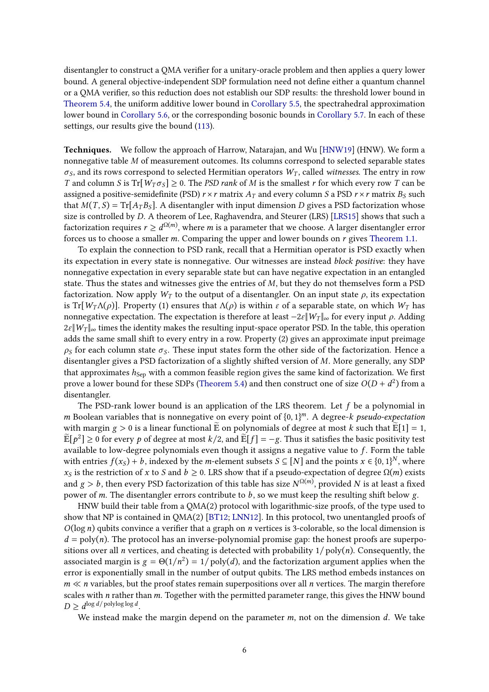
<figcaption class="paper-figure-caption"><b>Fig 5.</b> Low-resolution page preview, page 6</figcaption>
</figure>
</div>
<p><strong>Summary.</strong> This paper derives strong, quantitative lower bounds on the size of semidefinite programs needed to approximate the set of separable quantum states. By connecting these bounds to the concept of approximate disentanglers, the authors provide a powerful tool to study the computational complexity of quantum information tasks, improving upon previous results in the field.</p>
<p><strong>Why it may be interesting.</strong> This work provides deep mathematical tools (SDP complexity bounds) to quantify the computational separation between quantum complexity classes, which is fundamental to understanding the limits of quantum computation.</p>
<details>
<summary>Detailed structure</summary>
<p><strong>Main problem.</strong> The paper aims to establish quantitative lower bounds on the size of Semidefinite Programs (SDPs) used to approximate the maximum acceptance probability over separable quantum states, which is central to understanding the complexity class QMA(2).</p>
<p><strong>Main result.</strong> They prove that the required SDP size grows superpolynomially with the dimension $d$ for constant approximation errors, improving previous bounds significantly.</p>
<p><strong>Method.</strong> The proof combines the quantitative pseudo-density theorem of Lee, Raghavendra, and Steurer with the extended-formulation model of SDPs, relating the required size to the approximation error.</p>
<p><strong>Model / system.</strong> The focus is on bipartite quantum systems ($\mathbb{C}^d \otimes \mathbb{C}^d$) and the set of separable quantum states, $  ext{Sep}(d:d)$. The context is quantum complexity theory, specifically QMA(2).</p>
<p><strong>Key observables.</strong> The maximum acceptance probability $h_{Sep}(Q)$ and the required size ($r$) of the SDP approximation.</p>
<p><strong>Important parameters / regimes.</strong> The dimension $d$, the additive approximation error $a$, and the entanglement/disentangler errors $\epsilon, \delta$.</p>
<p><strong>Assumptions / limitations.</strong> The analysis relies on the SDP extended-formulation model (HNW) and the existence of an approximate disentangler $\Lambda$ whose failure to perfectly represent the separable set is quantified by the error $a$.</p>
<p><strong>Paper structure.</strong> The paper systematically derives lower bounds on the SDP size required to approximate the separable set, first for the general SDP formulation and then specifically by relating it to the structure imposed by approximate disentanglers.</p>
</details>
<details>
<summary>Abstract</summary>
<p>We prove quantitative lower bounds on the semidefinite extension complexity of the set of separable quantum states on $\mathbb{C}^d\otimes\mathbb{C}^d$. We consider semidefinite programs (SDPs) that approximate the maximum acceptance probability of a measurement over separable states, the optimization problem underlying QMA(2). In the extended-formulation model of Harrow, Natarajan, and Wu (HNW), all measurements share a common feasible region and an objective-independent embedding of product states that exactly reproduces their acceptance probabilities. For every $0<θ<2/7$, there are constants $c_θ,a_θ>0$ such that, for sufficiently large $d$, any such SDP with uniform additive error $0<a\le a_θ$ has size at least $d^{c_θ\min\{a^{-1/3},d^θ\}}$. The bound applies at sufficiently small constant error, is superpolynomial in $d$ whenever $a=o(1)$, and becomes $d^{Ω(d^θ)}$ when $a\le d^{-3θ}$, improving HNW's quasipolynomial bound at inverse- square error. The same bound holds for any SDP-representable convex set of states that contains all separable states and lies within trace distance $a$ of them, giving a quantitative counterpart to Fawzi's theorem that the separable set has no exact semidefinite representation. Our proof combines the quantitative pseudo-density theorem of Lee, Raghavendra, and Steurer with explicit block-positive operators and Chebyshev amplification. Our main results are supported by Lean proofs.</p>
</details>
<p><sub><a href="#top">↑ back to top</a></sub></p>

<p><a id="paper-2609.08315"></a></p>
<h3 id="spectral-characterization-of-the-uniform-theta-graph-math972math-and-classification-of-6-periodic-grover-walks"><a href="http://arxiv.org/abs/2609.08315v1">Spectral characterization of the uniform theta graph $Θ(t,2)$ and classification of 6-periodic Grover walks</a></h3>
<p><strong>Authors:</strong> Sho Kubota<br>
<strong>Type:</strong> theory · <strong>Category:</strong> other · <strong>PDF:</strong> <a href="https://arxiv.org/pdf/2609.08315v1">https://arxiv.org/pdf/2609.08315v1</a><br>
<strong>Analysis basis:</strong> full PDF text, analyzed in chunks</p>
<div class="figure-strip-hint">↔ Scroll figures horizontally</div>
<div class="paper-figures-scroll">
<figure class="paper-figure-card">
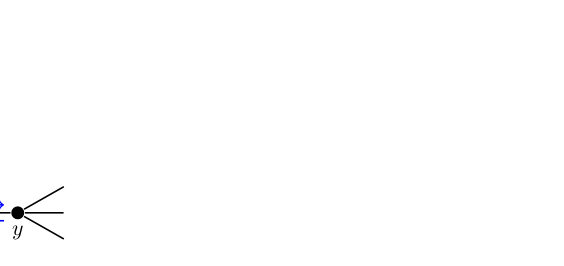
<figcaption class="paper-figure-caption"><b>Fig 1.</b> Figure 1: The entries of a vector written on the arcs of the graph</figcaption>
</figure>
<figure class="paper-figure-card">
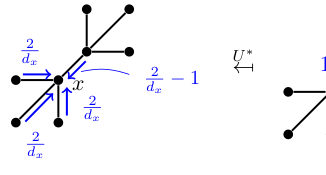
<figcaption class="paper-figure-caption"><b>Fig 2.</b> Figure 2: The action of U and U∗</figcaption>
</figure>
<figure class="paper-figure-card">
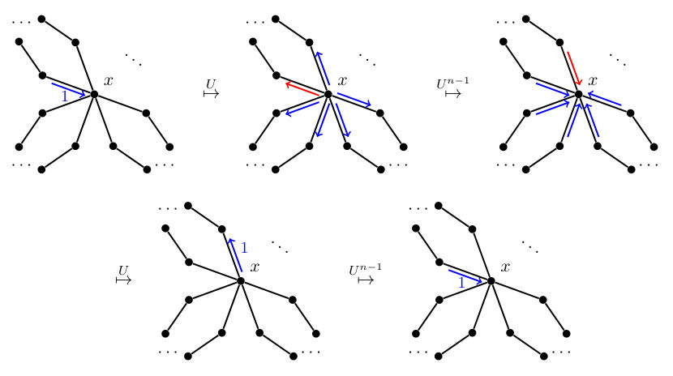
<figcaption class="paper-figure-caption"><b>Fig 3.</b> Figure 6: Proof of U2nea = ea. For arrows whose weights are not indicated, blue arrows have weight 1</figcaption>
</figure>
<figure class="paper-figure-card">
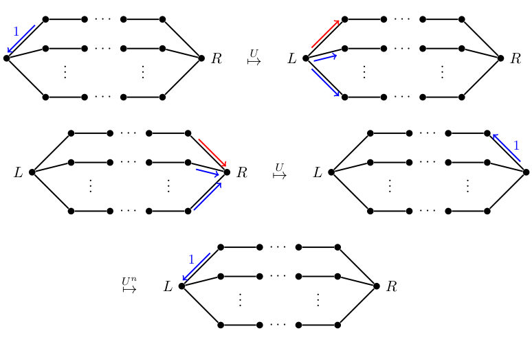
<figcaption class="paper-figure-caption"><b>Fig 4.</b> Figure 9: Proof of U2n+2ea = ea. For arrows whose weights are not indicated, blue arrows have weight 2</figcaption>
</figure>
<figure class="paper-figure-card">

<figcaption class="paper-figure-caption"><b>Fig 5.</b> Figure 10: The local structure around u at this stage. The red numbers indicate the degrees of the corresponding vertices.</figcaption>
</figure>
</div>
<p><strong>Summary.</strong> This paper uses spectral graph theory to analyze the dynamics of the Grover walk on specific graph families. It proves that the only connected graphs exhibiting a 6-periodic Grover walk are the Dutch windmill graphs $D(t)_3$ and the uniform theta graphs $\Theta(t,2)$. The work provides a complete spectral characterization for $\Theta(t, 2)$ based on its normalized adjacency matrix spectrum.</p>
<p><strong>Why it may be interesting.</strong> The connection between the spectral properties of graph Laplacians/Adjacency matrices and the periodicity of quantum walks provides a powerful tool for characterizing quantum systems on structured media.</p>
<details>
<summary>Detailed structure</summary>
<p><strong>Main problem.</strong> The paper aims to spectrally characterize the uniform theta graph $\Theta(t,2)$ and classify all connected graphs that exhibit a 6-periodic Grover walk.</p>
<p><strong>Main result.</strong> The only connected 6-periodic graphs are the Dutch windmill graphs $D(t)_3$ and the uniform theta graphs $\Theta(t,2)$. Furthermore, $\Theta(t, 2)$ is uniquely determined by the spectrum of its normalized adjacency matrix.</p>
<p><strong>Method.</strong> The analysis combines spectral graph theory (using the normalized adjacency and Laplacian matrices) with the mathematical properties of the Grover walk's time evolution operator $U(G)$.</p>
<p><strong>Model / system.</strong> The model is the Grover walk, a discrete-time quantum walk, analyzed on finite, simple graphs $G$. The dynamics are governed by the time evolution matrix $U(G)$.</p>
<p><strong>Key observables.</strong> The spectrum of the normalized adjacency matrix $T(G)$ and the periodicity $  au$ of the Grover walk ($U(G)^	au = I$).</p>
<p><strong>Important parameters / regimes.</strong> The parameters $t$ and $n$ defining the specific graph structures $\Theta(t,n)$ and $D_n^{(t)}$.</p>
<p><strong>Assumptions / limitations.</strong> The analysis assumes the graphs are connected and finite, and relies on relating the periodicity of the quantum walk directly to the eigenvalues of $T(G)$.</p>
<p><strong>Figures summary.</strong> Figures illustrate the structure of the graphs (e.g., $\Theta(t, n)$, $D(t)_n$) and the action of the time evolution operator $U$ on basis vectors on the graph's arcs.</p>
<p><strong>Paper structure.</strong> The paper proceeds by first establishing the spectral characterization of $\Theta(t, 2)$ and the periodicity of $D_n^{(t)}$ and $\Theta(t, n)$. It then uses the 6-periodicity condition to constrain the spectrum of $T(G)$, leading to a classification theorem that identifies $D(t)_3$ and $\Theta(t, 2)$ as the only possibilities.</p>
</details>
<details>
<summary>Abstract</summary>
<p>We characterize the uniform theta graph $Θ(t,2)$ by the spectrum of its normalized adjacency matrix, or equivalently, by the spectrum of its normalized Laplacian matrix. We also investigate the periodicity of Grover walks on nonregular graphs, which is closely related to the eigenvalues of the normalized adjacency matrix and those of the time evolution matrix of the Grover walk. We show that the Dutch windmill graph $D_n^{(t)}$ is $2n$-periodic and that the uniform theta graph $Θ(t,n)$ is $(2n+2)$-periodic. Furthermore, we completely determine the connected $6$-periodic graphs and prove that they are precisely $D_3^{(t)}$ with $t \geq 2$ and $Θ(t,2)$ with $t \geq 1$.</p>
</details>
<p><sub><a href="#top">↑ back to top</a></sub></p>

<p><a id="paper-2609.08141"></a></p>
<h3 id="successive-phase-transitions-from-a-composite-fermion-liquid-to-a-fractional-quantum-hall-state-at-32-driven-by-in-plane-magnetic-field"><a href="http://arxiv.org/abs/2609.08141v1">Successive Phase Transitions from a Composite Fermion Liquid to a Fractional Quantum Hall State at ν=3/2 Driven by In-Plane Magnetic Field</a></h3>
<p><strong>Authors:</strong> Xinghao Wang, L. N. Pfeiffer, A. Gupta, K. W. Baldwin, K. W. West, Rui-Rui Du<br>
<strong>Type:</strong> experiment · <strong>Category:</strong> strongly correlated electrons · <strong>PDF:</strong> <a href="https://arxiv.org/pdf/2609.08141v1">https://arxiv.org/pdf/2609.08141v1</a><br>
<strong>Analysis basis:</strong> full PDF text, analyzed in chunks</p>
<div class="figure-strip-hint">↔ Scroll figures horizontally</div>
<div class="paper-figures-scroll">
<figure class="paper-figure-card">
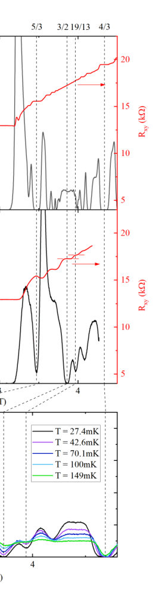
<figcaption class="paper-figure-caption"><b>Fig 1.</b> FIG. 1. Magnetoresistance 𝑅!! and Hall resistance 𝑅!&quot; measured at (a) 𝜃= 0° and (b) 𝜃=</figcaption>
</figure>
<figure class="paper-figure-card">
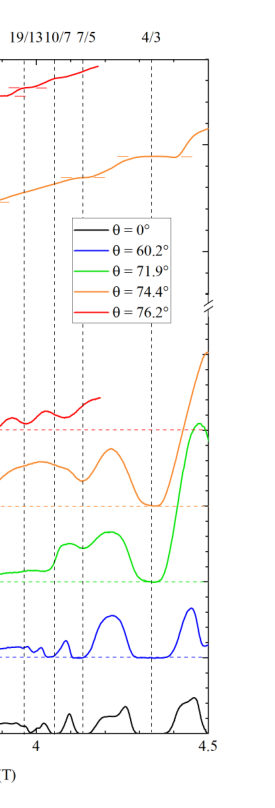
<figcaption class="paper-figure-caption"><b>Fig 2.</b> FIG. 2. Magnetoresistance 𝑅!! and Hall resistance 𝑅!&quot; measured at various tilt angles ranging</figcaption>
</figure>
<figure class="paper-figure-card">
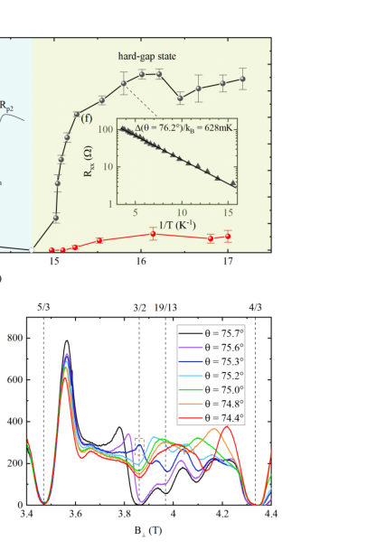
<figcaption class="paper-figure-caption"><b>Fig 3.</b> FIG. 3. (a) Thermal excitation gap energy at 𝜈= 3/2 and 19/13 as a function of the in-plane</figcaption>
</figure>
</div>
<p><strong>Summary.</strong> This work reports on the observation of successive phase transitions in a $\nu=3/2$ Fractional Quantum Hall state within a GaAs quantum well, driven solely by an in-plane magnetic field. The system transitions from a Composite Fermion liquid through a soft-gap state to a robust, hard-gap FQH state. This demonstrates that topological order can be engineered by manipulating the electron's k-space Fermi contour using external magnetic fields.</p>
<p><strong>Why it may be interesting.</strong> The observation of field-induced topological transitions in a highly correlated electron system like the FQH state provides a clean experimental platform to study how external fields can engineer topological order, which has implications for understanding exotic quantum states.</p>
<details>
<summary>Detailed structure</summary>
<p><strong>Main problem.</strong> The study investigates the successive phase transitions occurring in a Fractional Quantum Hall (FQH) state at filling fraction $\nu=3/2$ when driven by an in-plane magnetic field ($B_{\parallel}$).</p>
<p><strong>Main result.</strong> The system undergoes two distinct transitions: from a Composite Fermion (CF) liquid to a soft-gap FQH state, followed by a transition to a hard-gap, robust FQH state, accompanied by a daughter state at $\nu=19/13$.</p>
<p><strong>Method.</strong> Measurements of magnetoresistance ($R_{xx}$) and Hall resistance ($R_{xy}$) are performed on an ultra-high-mobility GaAs quantum well by varying the in-plane magnetic field and tilt angle.</p>
<p><strong>Model / system.</strong> The physical system is a two-dimensional electron gas (2DEG) in a GaAs quantum well, exhibiting correlated electron behavior characteristic of the Fractional Quantum Hall Effect. The theoretical framework involves composite fermion theory and analyzing the splitting of the Fermi contour in k-space.</p>
<p><strong>Key observables.</strong> FQH plateaus, resistance jumps, gap energy ($\Delta''$), and the evolution of $R_{xx}$ and $R_{xy}$ as a function of $B_{\parallel}$.</p>
<p><strong>Important parameters / regimes.</strong> Filling factor $\nu=3/2$, in-plane magnetic field $B_{\parallel}$ (transition points at $\sim 12.2$ T and $\sim 14.7$ T), and the tilt angle $\theta$.</p>
<p><strong>Assumptions / limitations.</strong> The analysis assumes that the in-plane field causes a k-space Fermi contour splitting, driving the transition from a CF liquid to a topologically distinct FQH state.</p>
<p><strong>Figures summary.</strong> Figures detail the evolution of $R_{xx}$ and $R_{xy}$ with tilt angle and $B_{\parallel}$, specifically highlighting the two transition points at $\nu=3/2$ and the associated daughter state at $\nu=19/13$.</p>
<p><strong>Paper structure.</strong> The paper systematically presents data showing the initial CF liquid state, followed by the first transition to a soft-gap FQH state, and finally the second transition to a hard-gap, robust FQH state, supported by gap measurements and theoretical interpretations of the k-space physics.</p>
</details>
<details>
<summary>Abstract</summary>
<p>We report an even-denominator fractional quantum Hall state at ν = 3/2 induced entirely by in-plane magnetic field B_|| in an ultra-high-mobility GaAs quantum well. As B_|| increases, the system undergoes two successive transitions: from a composite fermion liquid to a soft-gap FQH state (B_||~12.2 T), then via a topological phase transition to a hard-gap robust FQH state (B_||~14.7 T), accompanied by a daughter state at ν = 19/13. We present systematic data, and discuss a possible scenario in interpreting these findings. Our work demonstrates that topological order may be engineered through k-space Fermi contour splitting under an in-plane magnetic field.</p>
</details>
<p><sub><a href="#top">↑ back to top</a></sub></p>

<p><a id="paper-2609.08120"></a></p>
<h3 id="textures-as-a-phase-transition-probe-for-quantum-spin-chains"><a href="http://arxiv.org/abs/2609.08120v1">Textures as a phase-transition probe for quantum spin chains</a></h3>
<p><strong>Authors:</strong> Heitor P. Casagrande, Isaac M. Carvalho, William J. Munro, Krissia Zawadzki<br>
<strong>Type:</strong> theory · <strong>Category:</strong> other · <strong>PDF:</strong> <a href="https://arxiv.org/pdf/2609.08120v1">https://arxiv.org/pdf/2609.08120v1</a><br>
<strong>Analysis basis:</strong> full PDF text, analyzed in chunks</p>
<div class="figure-strip-hint">↔ Scroll figures horizontally</div>
<div class="paper-figures-scroll">
<figure class="paper-figure-card">
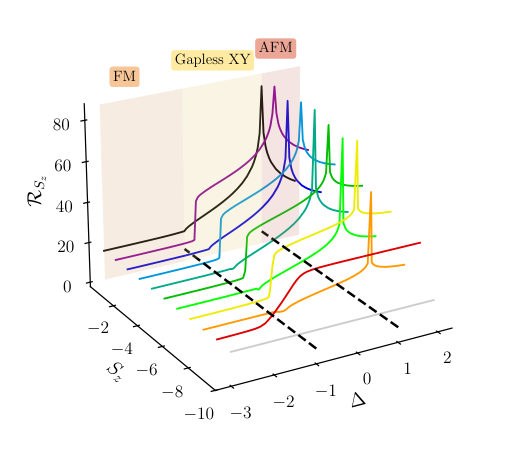
<figcaption class="paper-figure-caption"><b>Fig 1.</b> FIG. 1. Symmetry-resolved rugosity RSz versus ∆for different magnetization sectors. The parity dependence of the symmetry-resolved rugosity sectors can be clearly seen at the point ∆= −1, but the peak at ∆= +1 is present at every sector but the fully polarized ones.</figcaption>
</figure>
<figure class="paper-figure-card">
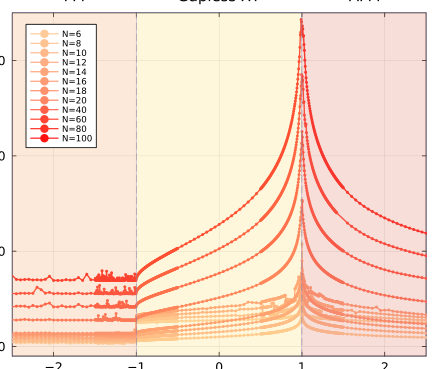
<figcaption class="paper-figure-caption"><b>Fig 2.</b> FIG. 2. Global rugosity R versus anisotropy ∆for different system sizes. Lighter tones correspond to smaller sizes, and darker tones to larger sizes. We see a consistent trend among all system-sizes: a slow increase starting at ∆= −1 and a pronounced peak at ∆= 1.</figcaption>
</figure>
<figure class="paper-figure-card">
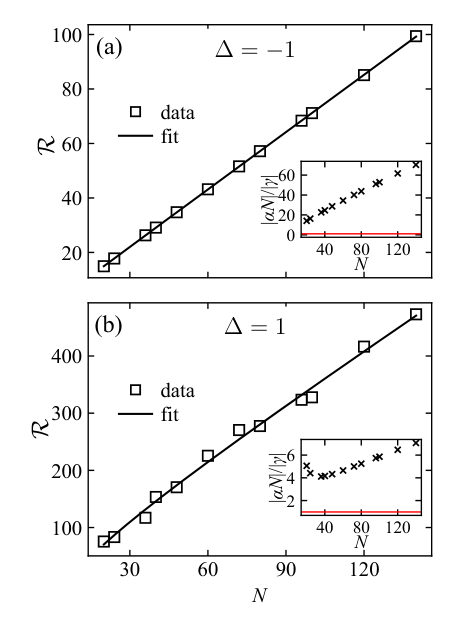
<figcaption class="paper-figure-caption"><b>Fig 3.</b> FIG. 3. Finite-size scaling of the rugosity at the phase- transition points ∆= {−1, 1}. Symbols denote numerical data, while solid lines correspond to fits using R(N) = αN + β log N + c. Insets show the ratio |αN|/|γ|, with γ = β log N + c; the red horizontal line marks |αN|/|γ| = 1, where extensive and sub-leading contributions have equal magnitude.</figcaption>
</figure>
<figure class="paper-figure-card">
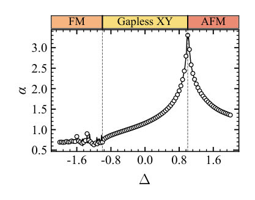
<figcaption class="paper-figure-caption"><b>Fig 4.</b> FIG. 4. Extensive coefficient α extracted from fits of the form R(N) = αN +β log N +c as a function of ∆. Vertical dashed lines indicate the transition points at ∆= ±1.</figcaption>
</figure>
</div>
<p><strong>Summary.</strong> This work introduces and applies the rugosity metric, derived from quantum texture, to study quantum phase transitions in the Heisenberg XXZ spin chain. The authors demonstrate that rugosity provides highly sensitive signatures at critical points, particularly highlighting the unique behavior at the BKT transition ($\Delta=1$). This establishes rugosity as a powerful, simple diagnostic tool for probing the structure of quantum correlations across the phase diagram.</p>
<p><strong>Why it may be interesting.</strong> The use of a geometric/information-theoretic measure (rugosity) to characterize fundamental physical transitions (QPTs) provides a novel, potentially universal diagnostic tool for strongly correlated quantum matter.</p>
<details>
<summary>Detailed structure</summary>
<p><strong>Main problem.</strong> The paper aims to use the quantum texture, specifically the rugosity metric, as a simple and effective diagnostic tool to probe quantum phase transitions (QPTs) in quantum spin systems.</p>
<p><strong>Main result.</strong> Rugosity exhibits distinct, sharp signatures at both the first-order ($\Delta=-1$) and BKT ($\Delta=1$) transition points of the Heisenberg XXZ model, showing sensitivity to the underlying spin-correlation hierarchy.</p>
<p><strong>Method.</strong> The study employs theoretical analysis, utilizing the rugosity metric derived from quantum texture, and analyzes finite-size scaling behavior across the phase diagram.</p>
<p><strong>Model / system.</strong> The primary system is the Heisenberg XXZ model defined on a spin chain, characterized by the anisotropy parameter $\Delta$. The Hamiltonian is studied in the context of its known QPTs at $\Delta=-1$ and $\Delta=1$.</p>
<p><strong>Key observables.</strong> Rugosity ($R$), symmetry-resolved rugosity ($R_Q$), and the extensive coefficient ($\alpha$) derived from finite-size scaling.</p>
<p><strong>Important parameters / regimes.</strong> The anisotropy parameter $\Delta$, which tunes the system between different magnetic phases, and the system size $N$.</p>
<p><strong>Assumptions / limitations.</strong> The analysis assumes that rugosity is a powerful witness for QPTs, and that the finite-size scaling can be accurately modeled by $R(N) = \alpha N + eta \ln N + c$.</p>
<p><strong>Figures summary.</strong> Figures illustrate the dependence of rugosity on $\Delta$ for different magnetization sectors, showing parity effects at $\Delta=-1$ and a peak at $\Delta=1$. Scaling analysis confirms the dominance of the extensive term $\alpha N$ near transitions.</p>
<p><strong>Paper structure.</strong> The paper introduces the concept of quantum texture and rugosity, applies it to the XXZ model, analyzes the results by comparing global vs. symmetry-resolved rugosities across the phase diagram, and concludes by interpreting the observed signatures at the critical points.</p>
</details>
<details>
<summary>Abstract</summary>
<p>The idea of quantum texture has been recently proposed and used as a tool for quantifying coherences and for quantum gate identification. In this work we offer a study on its usage to quantum phase transitions, demonstrating the rugosity metric as a simple tool for effective phase-transition probing. We establish the link between rugosity in the computational basis and the hierarchy of spin correlators, and analyze rugosities defined in the global ground-state and in ground-states belonging to different magnetization sectors (to which we refer to as global vs symmetry-resolved rugosities) to study the phase diagram of the Heisenberg XXZ model. We find distinct rugosity signatures at both transition points. In particular, a sharp feature appears at $Δ=1$ already for small systems, revealing a pronounced sensitivity of the correlation hierarchy encoded by the texture to this point. Since the BKT transition coincides with the isotropic $SU(2)$ point of the XXZ model, this behavior may reflect a particular sensitivity of rugosity to the structure of the spin-correlation hierarchy at isotropy.</p>
</details>
<p><sub><a href="#top">↑ back to top</a></sub></p>

<p><a id="paper-2609.08233"></a></p>
<h3 id="transversal-fanout-for-fault-tolerant-distributed-quantum-computing-analysis-and-application"><a href="http://arxiv.org/abs/2609.08233v1">Transversal Fanout for Fault Tolerant Distributed Quantum Computing: Analysis and Application</a></h3>
<p><strong>Authors:</strong> Seng W. Loke<br>
<strong>Type:</strong> theory · <strong>Category:</strong> quantum information and computing · <strong>PDF:</strong> <a href="https://arxiv.org/pdf/2609.08233v1">https://arxiv.org/pdf/2609.08233v1</a><br>
<strong>Analysis basis:</strong> full PDF text, analyzed in chunks</p>
<div class="figure-strip-hint">↔ Scroll figures horizontally</div>
<div class="paper-figures-scroll">
<figure class="paper-figure-card">
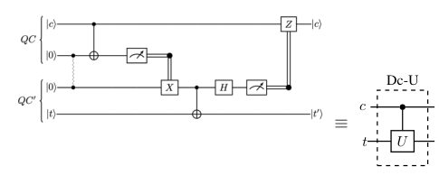
<figcaption class="paper-figure-caption"><b>Fig 1.</b> Fig. 1: Distributed controlled-U (i.e., dCNOT is when U=X (⊕) as shown) between nodes QC and QC′ (the computation qubits are c, the control qubit, and t, the target qubit), and the wavy line illustrates a Bell pair involving the communication qubits from the two nodes both initially |0⟩. The right hand side shows the notation we will use for a distributed controlled- U operation.</figcaption>
</figure>
<figure class="paper-figure-card">
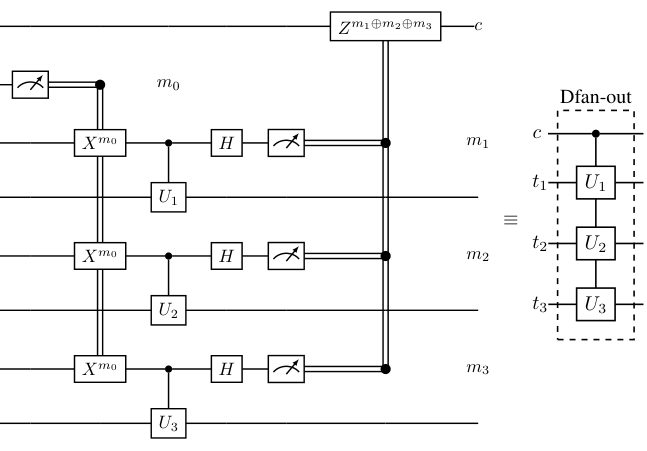
<figcaption class="paper-figure-caption"><b>Fig 2.</b> Fig. 2: Distributed fanout operation with single control qubit (on A′) for multiple target qubits (one on A, one on B and one on C) - all target qubits on different nodes from the control qubit. The right hand side shows the notation we will use for distributed fan-out throughout the paper. Note that mi ∈{0, 1}.</figcaption>
</figure>
<figure class="paper-figure-card">
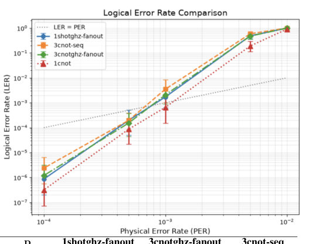
<figcaption class="paper-figure-caption"><b>Fig 3.</b> Fig. 3: LER vs PER for a four node distributed fanout with p = pebit = pghz, comparing three different distributed fanout implementations - one using a one shot approach to create distributed GHZ states (1shotghz-fanout), one using GHZ states constructed using a sequence of neighbouring non-local CNOTs (3cnotghz-fanout), and one is a sequence of CNOTS (using only Bell pairs and not using GHZ states) equivalent to the fanout (3cnot-seq), as well as a single distributed CNOT (1cnot) for comparison. The table shows the plotted values.</figcaption>
</figure>
<figure class="paper-figure-card">
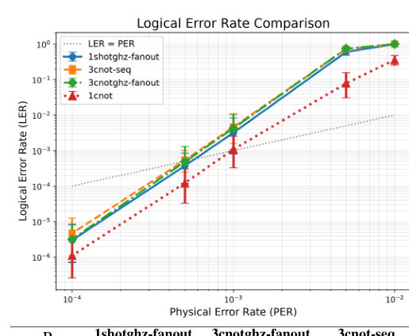
<figcaption class="paper-figure-caption"><b>Fig 4.</b> Fig. 4: LER vs PER for a four node distributed fanout with 10p = pebit = pghz, comparing three different distributed fanout implementations - one using a one shot approach to create distributed GHZ states (1shotghz-fanout), one using GHZ states constructed using a sequence of neighbouring non- local CNOTs (3cnotghz-fanout), and one is a sequence of CNOTS (using only Bell pairs and not using GHZ states) equivalent to the fanout (3cnot-seq), as well as a single distributed CNOT (1cnot) for comparison. The table shows the plotted values.</figcaption>
</figure>
<figure class="paper-figure-card">
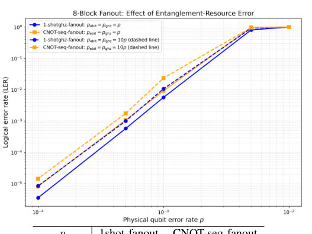
<figcaption class="paper-figure-caption"><b>Fig 5.</b> Fig. 5: LER vs PER for an eight node (one data block per node) distributed fanout with p = pebit = pghz (top table) and 10p = pebit = pghz (bottom table), comparing two different distributed fanout implementations - one using a one shot approach to create distributed GHZ states (1shotghz) for the fanout, and one is a sequence of CNOTS (using only Bell pairs) equivalent to the fanout (CNOT-seq).</figcaption>
</figure>
</div>
<p><strong>Summary.</strong> This paper presents a resource-efficient method for performing logical fanout operations in distributed quantum computing by leveraging transversal operations on error-corrected code blocks. By analyzing the resource costs and simulating the logical error rates, the authors demonstrate that this approach significantly improves fault tolerance over naive implementations. It provides a systematic framework for building complex, high-fanout quantum circuits across multiple physical nodes.</p>
<p><strong>Why it may be interesting.</strong> While focused on computation, the analysis of error propagation and resource scaling in distributed quantum networks is highly relevant to understanding noise management in physical quantum hardware platforms.</p>
<details>
<summary>Detailed structure</summary>
<p><strong>Main problem.</strong> The paper addresses the resource-efficient implementation of logical fanout operations, which are crucial primitives for fault-tolerant distributed quantum computing.</p>
<p><strong>Main result.</strong> The authors propose using transversal logical operations on encoded blocks to construct distributed fanout circuits that significantly reduce the required non-local communication compared to direct implementations.</p>
<p><strong>Method.</strong> They develop a systematic method by exploiting the structure of quantum error-correcting codes (like the BB-code) and analyzing the resulting physical gate requirements, comparing GHZ-based versus CNOT-based resource costs.</p>
<p><strong>Model / system.</strong> The model is distributed quantum computing across multiple nodes, utilizing quantum error-correcting code blocks (specifically the Bivariate-Bicycle or BB-code) to encode logical qubits.</p>
<p><strong>Key observables.</strong> Logical Error Rate (LER), circuit-depth, entanglement requirements (Bell pairs vs. GHZ states), and physical gate decomposition.</p>
<p><strong>Important parameters / regimes.</strong> Physical error rate ($p$), inter-node ebit noise ($p_{	ext{ebit}}$), and the number of nodes (e.g., 4 or 8).</p>
<p><strong>Assumptions / limitations.</strong> The comparison of resources assumes the availability of multi-party GHZ states; the analysis is circuit-level and depends on the fidelity of syndrome extraction.</p>
<p><strong>Figures summary.</strong> Figures illustrate the distributed fanout operation and the complex, multi-step construction of global gates like $    ext{GCZ}_{16}$ over multiple nodes, showing the required reordering of local and inter-node operations.</p>
<p><strong>Paper structure.</strong> The paper progresses from defining the problem (logical fanout) to proposing a transversal gadget, analyzing resource costs (Table I), simulating the performance (LER vs. PER plots), and finally applying the technique to construct complex global gates like $ ext{GCZ}$ circuits.</p>
</details>
<details>
<summary>Abstract</summary>
<p>We study a resource-efficient approach for implementing logical fanout operations in fault-tolerant distributed quantum computing using transversal operations on quantum error-correcting code blocks. Logical fanout, comprising multiple controlled-NOT operations from a common control qubit to target qubits located at remote nodes, is an important primitive for distributed quantum computation but can require substantial non-local communication when implemented directly between encoded blocks. We exploit the structure of encoded blocks and the availability of transversal logical operations to construct distributed fanout circuits that reduce the required non-local operations while preserving the logical action of the fanout operation. The construction is developed for encoded quantum information and illustrated using Bivariate Bicycle (BB)-code blocks. We analyze the resulting physical gate, entanglement, circuit-depth, and ancilla requirements. The approach provides a systematic method for implementing large logical fanout operations across distributed error-corrected quantum processors. Also, we study a distributed implementation of the global gate GCZ involving logical qubits (encoded using BB-code blocks), exploiting the concurrency in transversal distributed fanouts.</p>
</details>
<p><sub><a href="#top">↑ back to top</a></sub></p>

<p><a id="paper-2609.08423"></a></p>
<h3 id="trapdoor-functions-with-secure-key-leasing-and-copy-protection"><a href="http://arxiv.org/abs/2609.08423v1">Trapdoor Functions with Secure Key Leasing and Copy Protection</a></h3>
<p><strong>Authors:</strong> Fuyuki Kitagawa, Ryo Nishimaki, Yuki Shirakawa, Takashi Yamakawa<br>
<strong>Type:</strong> theory · <strong>Category:</strong> other · <strong>PDF:</strong> <a href="https://arxiv.org/pdf/2609.08423v1">https://arxiv.org/pdf/2609.08423v1</a><br>
<strong>Analysis basis:</strong> full PDF text, analyzed in chunks</p>
<div class="figure-strip-hint">↔ Scroll figures horizontally</div>
<div class="paper-figures-scroll">
<figure class="paper-figure-card">
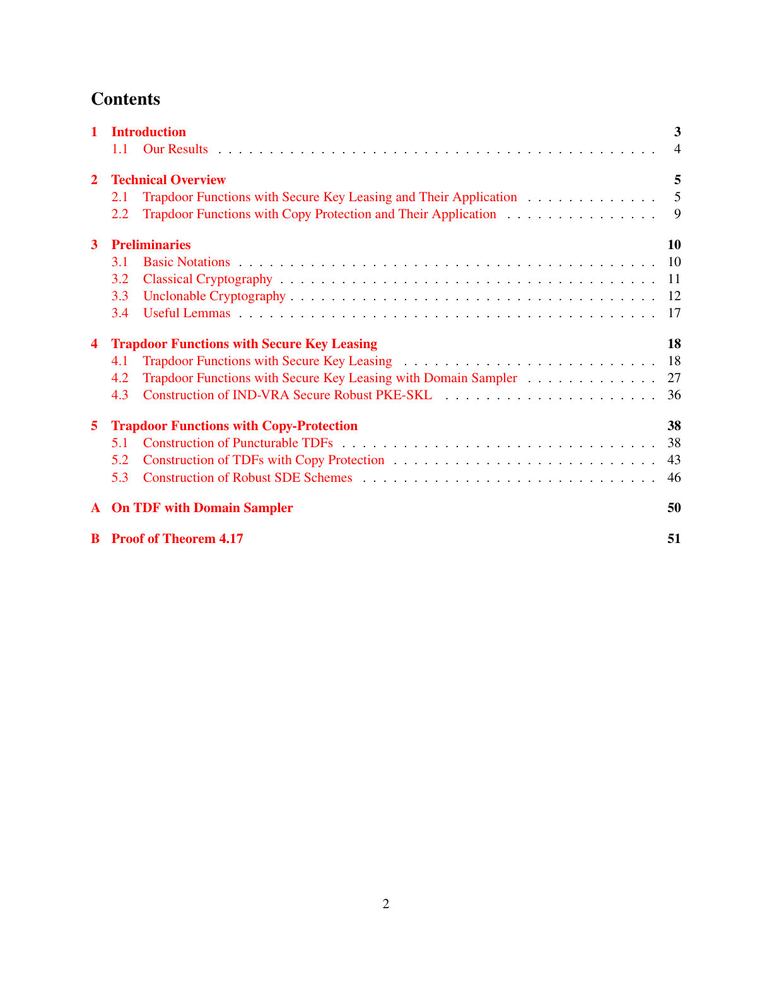
<figcaption class="paper-figure-caption"><b>Fig 1.</b> Low-resolution page preview, page 2</figcaption>
</figure>
<figure class="paper-figure-card">
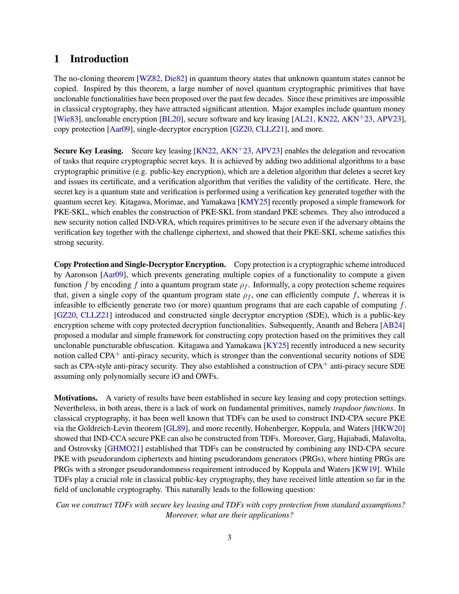
<figcaption class="paper-figure-caption"><b>Fig 2.</b> Low-resolution page preview, page 3</figcaption>
</figure>
<figure class="paper-figure-card">
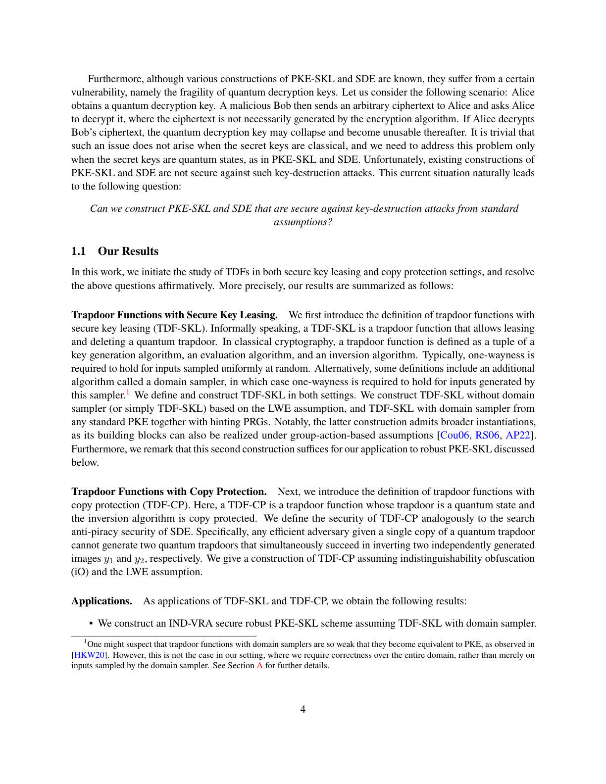
<figcaption class="paper-figure-caption"><b>Fig 3.</b> Low-resolution page preview, page 4</figcaption>
</figure>
<figure class="paper-figure-card">
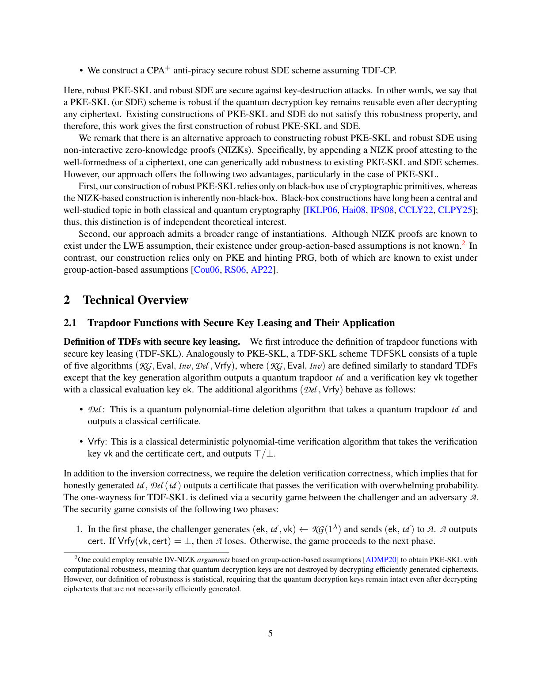
<figcaption class="paper-figure-caption"><b>Fig 4.</b> Low-resolution page preview, page 5</figcaption>
</figure>
<figure class="paper-figure-card">
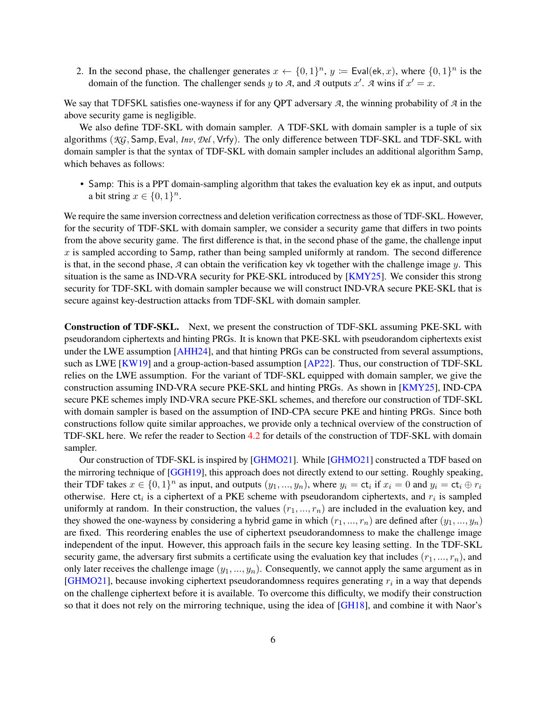
<figcaption class="paper-figure-caption"><b>Fig 5.</b> Low-resolution page preview, page 6</figcaption>
</figure>
</div>
<p><strong>Summary.</strong> This paper investigates the application of Trapdoor Functions (TDFs) to quantum cryptographic primitives such as secure key leasing and copy protection. The authors construct novel, robust cryptographic schemes for PKE-SKL and SDE that solve the critical vulnerability of key destruction. The work advances the theoretical understanding of TDFs in quantum security contexts.</p>
<p><strong>Why it may be interesting.</strong> While the topic is purely theoretical cryptography, the underlying mathematical rigor and the focus on information-theoretic security concepts (like those derived from quantum principles) are highly relevant to the theoretical foundations of quantum information science.</p>
<details>
<summary>Detailed structure</summary>
<p><strong>Main problem.</strong> The paper extends the study of Trapdoor Functions (TDFs) to quantum cryptographic primitives like secure key leasing (TDF-SKL) and copy protection (TDF-CP). It aims to develop robust cryptographic schemes based on these concepts.</p>
<p><strong>Main result.</strong> The authors provide constructions for TDF-SKL and TDF-CP, and subsequently construct robust Public Key Encryption with Secure Key Leasing (PKE-SKL) and Single-Decryptor Encryption (SDE) schemes that resist key-destruction attacks.</p>
<p><strong>Method.</strong> The work involves formalizing new definitions for TDF-SKL and TDF-CP, providing constructions based on assumptions like the LWE problem, and employing advanced cryptographic proof techniques (e.g., hybrid games, averaging arguments) to establish security.</p>
<p><strong>Model / system.</strong> The model is purely theoretical, focusing on quantum cryptographic primitives inspired by the no-cloning theorem. It deals with abstract concepts like quantum trapdoors, key leasing, and copy protection functionalities.</p>
<p><strong>Key observables.</strong> Security notions such as IND-VRA (Indistinguishability under Verifiable Random Access) and CPA+ anti-piracy security, alongside the reusability of quantum decryption keys.</p>
<p><strong>Important parameters / regimes.</strong> The security parameter $\lambda$ and polynomial functions $p(\lambda)$ are used in the security proofs.</p>
<p><strong>Assumptions / limitations.</strong> The constructions rely on the Learning With Errors (LWE) assumption, indistinguishability obfuscation (iO), and the existence of specific pseudorandom generators.</p>
<p><strong>Figures summary.</strong> Figure 3 describes the algorithm $B^*$, which is used in the security proof to simulate an experiment and compare outputs to establish the security bound for TDFSKL.</p>
<p><strong>Paper structure.</strong> The paper introduces TDF-SKL and TDF-CP definitions, presents constructions for both, and then applies these to build robust PKE-SKL and SDE schemes, culminating in detailed security proofs for these robust schemes.</p>
</details>
<details>
<summary>Abstract</summary>
<p>Inspired by the no-cloning theorem in quantum theory, a variety of quantum cryptographic primitives with unclonable functionalities, such as secure key leasing and copy protection, have been proposed and attracted significant attention. However, trapdoor functions (TDFs), fundamental primitives in public-key cryptography, have not been extensively studied in these areas. In this work, we initiate a study of TDFs in both secure key leasing and copy protection settings. We first introduce the definition of TDFs with secure key leasing (TDF-SKL), which enables leasing and deleting of quantum trapdoors. We formalize TDF-SKL both with and without domain sampler, and give a construction of TDF-SKL without domain sampler based on the LWE assumption and a construction of TDF-SKL with domain sampler based on any standard PKE schemes combined with hinting pseudorandom generators [Koppula and Waters, CRYPTO 2019]. Next, we define TDFs with copy protection (TDF-CP), where the inversion functionality is copy protected by a quantum trapdoor. We establish a construction of TDF-CP assuming indistinguishability obfuscation and the LWE assumption, following a modular framework of copy protection proposed by Ananth and Behera [CRYPTO 2024]. We also present applications of TDF-SKL and TDF-CP. Existing constructions of public-key encryption with secure key leasing (PKE-SKL) and single-decryptor encryption (SDE) suffer from a critical vulnerability: quantum decryption keys may be destroyed after decrypting maliciously chosen ciphertexts. We construct PKE-SKL schemes and SDE schemes with robust quantum decryption keys that remain reusable after decrypting arbitrary ciphertexts from TDF-SKL and TDF-CP, respectively.</p>
</details>
<p><sub><a href="#top">↑ back to top</a></sub></p>

<p><a id="paper-2609.07950"></a></p>
<h3 id="vertical-quantum-confinement-in-bulk-mosmath1052math"><a href="http://arxiv.org/abs/2609.07950v1">Vertical quantum confinement in bulk MoS$_2$</a></h3>
<p><strong>Authors:</strong> Jairo Obando-Guevara, Álvaro González-García, Marcin Rosmus, Natalia Olszowska, César González, Miguel Ángel González-Barrio, Antonio Tejeda, Arantzazu Mascaraque<br>
<strong>Type:</strong> both · <strong>Category:</strong> other · <strong>PDF:</strong> <a href="https://arxiv.org/pdf/2609.07950v1">https://arxiv.org/pdf/2609.07950v1</a><br>
<strong>Analysis basis:</strong> full PDF text, analyzed in chunks</p>
<div class="figure-strip-hint">↔ Scroll figures horizontally</div>
<div class="paper-figures-scroll">
<figure class="paper-figure-card">

<figcaption class="paper-figure-caption"><b>Fig 1.</b> FIG. 1. (a) Side view of the 2H MoS2 crystalline struc- ture where two layers are depicted. Mo atoms (blue) and S atoms (orange). (b) Hexagonal BZ (orange line) and its high-symmetry points. On top, we depict the projected SBZ (purple line). (c) ARPES curvature intensity showing the MoS2 band structure along the MΓKM high-symmetry direc- tions. The data was measured with hν = 70 eV.</figcaption>
</figure>
<figure class="paper-figure-card">

<figcaption class="paper-figure-caption"><b>Fig 2.</b> Fig. 1a shows the MoS2 structure in its hexagonal 2H crystalline phase (P63/mmc space group symmetry). The structure is oriented so that the basal plane (0001) is exposed, forming the surface. The crystal has the lat- tice parameters a = b = 3.161 Å and c = 12.295 Å, with an interlayer distance of 6.15 Å46. Fig. 1b displays the hexagonal bulk Brillouin zone (BZ), its high-symmetry points corresponding to the 2H crystalline structure and its projection on the (0001) surface. The choice of pho- ton energy yields different flat sections of the BZ along the kz direction. Fig. 1c shows the energy-momentum</figcaption>
</figure>
<figure class="paper-figure-card">

<figcaption class="paper-figure-caption"><b>Fig 3.</b> FIG. 2. Curvature intensity of the parabolic convex dispersion of the bulk band centred at the Γ point along the ΓK direction for six different samples mechanically exfoliated. The data was measured with hν = 70 eV. (a) Bulk-like sample. (b-f) Samples showing additional spectral features. The side integers index the additional states. The dashed red lines mark their binding energy at the Γ point as a visual guide. The green dashed line marks the intensity maximum of the bulk band.</figcaption>
</figure>
<figure class="paper-figure-card">

<figcaption class="paper-figure-caption"><b>Fig 4.</b> FIG. 3. DFT calculated electronic band structures for 19 layers of 2H-MoS2 around the Γ point. (a) Ideal &quot;bulk&quot;. Note that the 19 QWS that appear below the VBM are due to the finite thickness of the slab. (b-d) Same calculations but with a multilayer stack of three topmost layers separated from their nominal position at distances h = 0.5, 1 and 2 Å, respectively to simulate decoupling from the bulk. In red, we mark the QWSs that change their biding energy and so, increasing the spectral weight in particular regions.</figcaption>
</figure>
<figure class="paper-figure-card">

<figcaption class="paper-figure-caption"><b>Fig 5.</b> FIG. 4. Curvature intensity of the parabolic band centred at Γ along the ΓK direction for different photon energies. The sample with nmax = 7 was measured with (a) hν = 40 eV, (b) hν = 70 eV and (c) hν = 100 eV. In (c) the energy of the n = 1 state was deduced from (a-b). The sample with nmax = 1 was measured at (d) hν = 50 eV and (e) hν = 70 eV. (f) Binding energy versus n for nmax = 1, 7 samples at the indicated photon energies. The dashed line corresponds to a linear fit. The average value of the energy error bar is ± 32 meV and was estimated considering the error in the VBM determination and the error determining the maxima of the peaks in a profile taken from the curvature spectra at...</figcaption>
</figure>
</div>
<p><strong>Summary.</strong> This work experimentally and theoretically investigates quantum confinement in bulk $  ext{MoS}_2$ using ARPES and DFT. The key finding is the observation of discrete quantum well states whose energy spacing follows a linear trend, suggesting a parabolic potential rather than the expected quadratic dependence. This confirms that mechanical exfoliation creates a quantum-confined multilayer stack suitable for studying fundamental quantum physics.</p>
<p><strong>Why it may be interesting.</strong> The observation of confinement in a solid-state material like $  ext{MoS}_2$ provides a platform to study fundamental quantum phenomena, such as intersubband transitions, in a controllable, layered solid-state system.</p>
<details>
<summary>Detailed structure</summary>
<p><strong>Main problem.</strong> The study aims to experimentally observe and theoretically characterize quantum confinement states (QWSs) within the electronic structure of bulk $   ext{MoS}_2$.</p>
<p><strong>Main result.</strong> ARPES measurements reveal QWSs at the $\Gamma$ point, confirming vertical quantum confinement, which exhibits a linear energy dependence on the quantum well index $n$, suggesting a parabolic-like potential.</p>
<p><strong>Method.</strong> The research combines Angle-Resolved Photoemission Spectroscopy (ARPES) experiments with Density Functional Theory (DFT) calculations to analyze the electronic band structure.</p>
<p><strong>Model / system.</strong> The physical system is bulk $   ext{MoS}_2$, where confinement is induced by the mechanical exfoliation process, effectively creating a multilayer stack detached from the bulk.</p>
<p><strong>Key observables.</strong> Quantum well states (QWSs) at the $\Gamma$ point, absence of $k_z$ dispersion, strong intensity modulation with photon energy, and the linear binding energy dependence of QWSs vs $n$.</p>
<p><strong>Important parameters / regimes.</strong> Photon energies ($h
u = 40, 70, 100     ext{ eV}$), quantum well index ($n$), and the layer thickness/decoupling distance.</p>
<p><strong>Assumptions / limitations.</strong> The confinement arises from the mechanical exfoliation process, creating reflective boundaries at the top and bottom interfaces of the multilayer stack.</p>
<p><strong>Figures summary.</strong> Figures illustrate the $   ext{MoS}_2$ structure, ARPES intensity curvature along high-symmetry directions, and model fits showing the linear energy spacing of QWSs against a half-parabolic potential.</p>
<p><strong>Paper structure.</strong> The paper progresses from experimental observation of QWSs via ARPES, confirming confinement, to theoretical modeling using DFT to explain the linear energy spacing and the physical mechanism of multilayer decoupling.</p>
</details>
<details>
<summary>Abstract</summary>
<p>We experimentally observe quantum confinement states in bulk MoS$_2$ using Angle-Resolved Photoemission Spectroscopy (ARPES). The band structure at the $\overlineΓ$ point reveals quantum well states (QWSs) linked to vertical quantum confinement of the electrons, confirmed by the absence of dispersion in k$_z$ and a strong intensity modulation with photon energy. Notably, the binding energy dependence of the QWSs vs $n$ does not follow the quadratic dependence of a two-dimensional electron gas. Instead, a linear behaviour is observed that is consistent with a parabolic-like quantum well. This confinement arises from the mechanical exfoliation preparation method, which leads to the detachment of a multilayer stack from the underlying bulk. This is confirmed by Density Functional Theory (DFT) calculations. The quantum confinement in bulk-like MoS$_2$ not only offers the opportunity to explore intersubband transitions to exploit optical properties but also provides a means to study fundamental quantum phenomena in multilayer stacks of different thicknesses.</p>
</details>
<p><sub><a href="#top">↑ back to top</a></sub></p>

<p><a id="paper-2609.08913"></a></p>
<h3 id="zirconium-carbide-as-a-high-temperature-benchmark-for-the-beyond-quasi-harmonic-method"><a href="http://arxiv.org/abs/2609.08913v1">Zirconium Carbide as a High-Temperature Benchmark for the Beyond Quasi-Harmonic Method</a></h3>
<p><strong>Authors:</strong> Christopher M. Stanley<br>
<strong>Type:</strong> theory · <strong>Category:</strong> statistical mechanics · <strong>PDF:</strong> <a href="https://arxiv.org/pdf/2609.08913v1">https://arxiv.org/pdf/2609.08913v1</a><br>
<strong>Analysis basis:</strong> full PDF text, analyzed in chunks</p>
<div class="figure-strip-hint">↔ Scroll figures horizontally</div>
<div class="paper-figures-scroll">
<figure class="paper-figure-card">

<figcaption class="paper-figure-caption"><b>Fig 1.</b> Figure 1. Qualitative schematic of the BQH/prepared-supercell energy extraction. The prepared-supercell code assigns a harmonic quadratic energy, based on the desired temperature, to a displacement along a normal-mode coordinate/Amplitude, while the DFT single-point calculation evaluates the true value of the system energy. The excess energy is identified as the anharmonic vibrational contribution, 𝐸$%&amp;$&#x27;(. As discussed in ref. [1] the desired temperature is mapped to an amplitude for each mode, yielding a specific configuration, that is given to SIESTA which outputs the true system energy.</figcaption>
</figure>
<figure class="paper-figure-card">

<figcaption class="paper-figure-caption"><b>Fig 2.</b> Figure 3. Anharmonic energy extracted from the prepared-supercell and DFT/SIESTA calculations as a function of temperature. The plotted polynomial fit is the function 𝐸$%&amp;$&#x27;((𝑇) which is then differentiated with respect to temperature to obtain the BQH anharmonic heat-capacity in Eq. (4).</figcaption>
</figure>
<figure class="paper-figure-card">

<figcaption class="paper-figure-caption"><b>Fig 3.</b> Figure 4. Expanded molar heat-capacity comparison for ZrC including the electronic correction. The solid purple line is the electronically corrected BQH result, 𝐶!,12398+(𝑇). The solid red line is the uncorrected BQH vibrational result. The other data have the same meanings as in Fig. 2.</figcaption>
</figure>
</div>
<p><strong>Summary.</strong> This work tackles the challenge of accurately calculating the heat capacity of $   ext{ZrC}$ at high temperatures by employing the Beyond Quasi-Harmonic (BQH) method. The BQH approach successfully captures anharmonic phonon contributions missed by simpler quasi-harmonic models. By adding a necessary electronic correction, the calculated heat capacity aligns closely with established, fully anharmonic theoretical benchmarks.</p>
<p><strong>Why it may be interesting.</strong> While focused on solid-state thermodynamics, the rigorous comparison of anharmonic methods (BQH vs. QHA) provides advanced insights into how anharmonicity modifies bulk thermodynamic properties, which is relevant for modeling complex quantum systems under extreme conditions.</p>
<details>
<summary>Detailed structure</summary>
<p><strong>Main problem.</strong> Accurately calculating the molar heat capacity at constant pressure, $C_p(T)$, from first principles, especially when anharmonic vibrational effects are significant.</p>
<p><strong>Main result.</strong> The Beyond Quasi-Harmonic (BQH) method, when combined with an electronic heat-capacity correction, brings the calculated molar heat capacity into close agreement with fully anharmonic theoretical benchmarks up to approximately 1200 K.</p>
<p><strong>Method.</strong> The BQH method uses a prepared-supercell first-principles approach to extract anharmonic vibrational energy directly from DFT energy evaluations, which is then supplemented by a first-order electronic correction.</p>
<p><strong>Model / system.</strong> The study uses rocksalt Zirconium Carbide ($    ext{ZrC}$) as a high-temperature benchmark material, which is technologically important and electronically conductive.</p>
<p><strong>Key observables.</strong> Molar heat capacity at constant pressure, $C_p(T)$; anharmonic vibrational energy contribution ($E_{	ext{anharmonic}}'$); electronic heat-capacity correction.</p>
<p><strong>Important parameters / regimes.</strong> High temperatures (up to 1500 K); electronic density of states at the Fermi level ($D(E_F)$).</p>
<p><strong>Assumptions / limitations.</strong> The electronic correction is treated as a first-order approximation using the Sommerfeld form, assuming the DOS is smooth near $E_F$.</p>
<p><strong>Figures summary.</strong> Figure 1 qualitatively illustrates the BQH/prepared-supercell energy extraction, showing the excess energy ($\Delta E'$) as the anharmonic vibrational contribution.</p>
<p><strong>Paper structure.</strong> The paper introduces the challenge of calculating $C_p(T)$ due to anharmonicity, details the BQH method and its comparison against CALPHAD and QHA benchmarks, and concludes by showing the agreement achieved after adding the electronic correction.</p>
</details>
<details>
<summary>Abstract</summary>
<p>Molar heat capacity at constant pressure, C_p (T), is a central thermodynamic quantity in materials science, but it remains difficult to calculate accurately from first principles when anharmonic vibrational effects become important. In this work, rocksalt ZrC is used as a high-temperature benchmark for the Beyond Quasi-Harmonic (BQH) method, a prepared-supercell first-principles approach that extracts anharmonic vibrational energy directly from density-functional-theory energy evaluations. The calculated BQH molar heat capacity is compared with CALPHAD reference values, a fully anharmonic thermodynamic-integration calculation, a calculated C_v (T) curve from the present work, and a quasi-harmonic calculation. The BQH curve gives a substantial improvement beyond C_v (T) and beyond the quasi-harmonic approximation. Because ZrC is electronically conductive, an electronic heat-capacity correction was also estimated from the density of states at the Fermi level and added to the vibrational BQH result. This correction brings the calculated molar heat capacity into close agreement with the fully anharmonic theoretical benchmark through approximately 1200 K. These results show that the BQH method fully captures important anharmonic phonon contributions missing from ordinary quasi-harmonic calculations.</p>
</details>
<p><sub><a href="#top">↑ back to top</a></sub></p>
</details>
<h2 id="secondary-cond-mat-archives">Secondary cond-mat archives</h2>
<p><em>Papers from cond-mat.mtrl-sci, mes-hall, other, soft, supr-con. These archives are de-prioritized — they appear at the end regardless of relevance score.</em></p>
<h3 id="relevant-in-secondary-archives-28">Relevant in secondary archives (28)</h3>

<p><a id="paper-2609.07962"></a></p>
<h3 id="steady-reservoir-mediated-self-trapping-of-polariton-condensates"><a href="http://arxiv.org/abs/2609.07962v1">Steady reservoir-mediated self-trapping of polariton condensates</a></h3>
<p><strong>Authors:</strong> Pavel N. Kozhevin, Oleg I. Utesov, Igor S. Aranson, Sergey V. Koniakhin, Anton V. Nalitov<br>
<strong>Type:</strong> theory · <strong>Category:</strong> other · <strong>PDF:</strong> <a href="https://arxiv.org/pdf/2609.07962v1">https://arxiv.org/pdf/2609.07962v1</a><br>
<strong>Analysis basis:</strong> full PDF text, analyzed in chunks
<strong>Topic relevance:</strong> 🔥 <code>driven-dissipative phase transition</code> <strong>4/5</strong> · <code>analog quantum simulation</code> <strong>3/5</strong> · <code>correlated / nonlocal dissipation</code> <strong>3/5</strong> · <code>methods for driven-dissipative</code> <strong>3/5</strong> · <code>non-equilibrium universality</code> <strong>3/5</strong> · <code>Keldysh / 2PI / non-Gaussian methods</code> <strong>2/5</strong> · <code>Tavis-Cummings &amp; cavity-many-emitter</code> <strong>1/5</strong></p>
<div class="figure-strip-hint">↔ Scroll figures horizontally</div>
<div class="paper-figures-scroll">
<figure class="paper-figure-card">

<figcaption class="paper-figure-caption"><b>Fig 1.</b> FIG. 1. The two types of steady condensate-reservoir states. Left: the self-trapped condensate (red) residing in a self- induced potential trap due to the hole-burning effect. Right: the standard ballistic condensate (blue) expanding due to the reservoir-induced potential hump. Arrows indicate the direc- tion of polariton current density.</figcaption>
</figure>
<figure class="paper-figure-card">

<figcaption class="paper-figure-caption"><b>Fig 2.</b> FIG. 2. Analytic results in the deeply nonlinear regime. a) The ratio of the condensate and the pump spot radii and b) the maximal condensate density, normalized by the pumping power for the self-trapped (Rc &lt; R, red), the intermediate (green), and the ballistic (Rc &gt; R, blue) solutions of Eqs. (2,3) at a = ξ = 0. The stability diagrams on the (c) R −ε (p0 = 2.5) and the (d) R −p0 (ε = 8) planes show bistabil- ity (purple), absence of any stable fixed points (white), and the absence of self-trapped states (gray). Inset: condensate energy µ as a function of R for ε = 6.5, showing that the self- trapped (red) state is more energetically favorable for small pump spot sizes.</figcaption>
</figure>
<figure class="paper-figure-card">

<figcaption class="paper-figure-caption"><b>Fig 3.</b> FIG. 3. Numerical phase diagram of the dynamical system. Blue and red colors correspond to ballistic and self-trapped states, bright and light tones correspond to stable and unsta- ble regions. Insets: condensate and reservoir densities |Ψ|2</figcaption>
</figure>
<figure class="paper-figure-card">

<figcaption class="paper-figure-caption"><b>Fig 4.</b> FIG. 4. Numerical stability map of self-trapped and ballistic solutions obtained directly from Eqs. (1). a) Rc/R of the compact self-trapped solution on the (R, p0) plane, indicating the BdG mode with the highest growth rate, i.e., the “most unstable”, for azimuthal perturbations m = 0, ±1, . . . , ±4 (dotted lines) and the linear condensation threshold (cyan). Hatching marks the region where the dominant unstable mode has radial excitation number n = 1 rather than n = 0. b) Physical condensate size Rc for the self-trapped (red) and ballistic (blue) solutions, converted using representative high-Q microcavity parameters (see text). Insets: condensate density |ψ|2 (top half) and reservoir...</figcaption>
</figure>
</div>

<p><strong>Summary.</strong> This paper theoretically analyzes polariton condensates, showing that the interaction with the optical reservoir can induce a self-trapping mechanism. This mechanism allows the condensate to form a stable, compact state with converging currents, even when the pump power is below the standard condensation threshold. The findings are crucial for understanding non-equilibrium dynamics and potential applications in neuromorphic devices.</p>
<p><strong>Why it may be interesting.</strong> This work directly addresses non-equilibrium dynamics in cavity quantum electrodynamics systems, providing a detailed theoretical framework for understanding how reservoir coupling can stabilize exotic, non-trivial spatial structures in bosonic condensates.</p>
<details>
<summary>Detailed structure</summary>
<p><strong>Main problem.</strong> The study investigates the formation and stability of self-trapped states in polariton condensates, contrasting them with the conventionally expected ballistically expanding state.</p>
<p><strong>Main result.</strong> Self-trapped states, driven by local reservoir depletion, can form stable, compact condensates even below the linear condensation threshold, exhibiting converging polariton currents.</p>
<p><strong>Method.</strong> The analysis employs the extended Gross-Pitaevskii Equation (eGPE) model, utilizing stability analysis (Bogoliubov-de Gennes) and examining stationary solutions in the deeply nonlinear regime.</p>
<p><strong>Model / system.</strong> The system models nonequilibrium exciton-polariton condensates, treated as a two-component system coupled to an incoherent optical reservoir, governed by coupled evolution equations.</p>
<p><strong>Key observables.</strong> Condensate density, polariton currents (converging vs. expanding), condensate energy, and the existence/stability of self-trapped vs. ballistic solutions.</p>
<p><strong>Important parameters / regimes.</strong> Condensation threshold ($p_{th}$), pump spot size ($R$), self-interaction strength ($\xi$), and reservoir coupling parameters ($\epsilon, a$).</p>
<p><strong>Assumptions / limitations.</strong> The analysis relies on approximations such as the Gaussian ansatz for stationary modes and the adiabatic elimination of the reservoir in certain limits.</p>
<p><strong>Figures summary.</strong> Figures compare self-trapped (hole-burning) vs. ballistic states, show stability diagrams mapping stable/unstable regions, and illustrate the evolution of polariton currents and density profiles.</p>
<p><strong>Paper structure.</strong> The paper progresses by establishing the eGPE model, deriving simplified dynamical equations, performing stability analyses (BdG), and finally mapping out the phase diagram showing the coexistence and stability of the self-trapped state below the linear threshold.</p>
</details>
<details>
<summary>Abstract</summary>
<p>Nonequilibrium bosonic condensates of exciton-polaritons generated by tightly focused incoherent optical beams are typically expected to form a stationary ballistically expanding state with the notable exception of experimentally observed compact self-trapped states [Phys. Rev. Lett. 123, 047401 (2019)]. We show that the back-action of the condensate on the optically pumped excitonic reservoir via bosonic stimulated scattering can cause local reservoir depletion, producing a steady condensate confined in a self-induced potential trap. Notably, this self-trapped state is formed by persistent converging rather than radially expanding polariton currents and exists even below the conventionally defined condensation threshold. This state remains steady over nanosecond-scale times and is eventually ejected from the self-induced trap due to a bullet-type instability, enabling spiking neuromorphic dynamics in networks of polariton condensates.</p>
</details>
<p><sub><a href="#top">↑ back to top</a></sub></p>

<p><a id="paper-2609.08425"></a></p>
<h3 id="from-london-to-morse-via-binnig-quate-and-gerber"><a href="http://arxiv.org/abs/2609.08425v1">From London to Morse via Binnig, Quate, and Gerber</a></h3>
<p><strong>Authors:</strong> Sofia Alonso Perez, Matthew O. Blunt, Frederick Carlisle, Neil R. Champness, Janette L. Dunn, Matthew Edmondson, Rowan Evers, Connor Fields, Subhashis Gangopadhyay, James Hayton, Samuel P. Jarvis, Filipe Junqueira, Lev Kantorovich, Brian Kiraly, Natalio Krasnogor, Ioannis Lekkas, Morten Møller, Philip Moriarty, Chris Pakes, Emmanuelle Pauliac-Vaujour, Oliver Phillips, Adrian Radocea, Philipp Rahe, Mohammad Abdur Rashid, Hongqian Sang, Alex Saywell, Nikhil Seeja Sivakumar, Peter Sharp, Andrew Stannard, Julian Stirling, Adam Sweetman, Simon Taylor, Richard A. J. Woolley<br>
<strong>Type:</strong> both · <strong>Category:</strong> other · <strong>PDF:</strong> <a href="https://arxiv.org/pdf/2609.08425v1">https://arxiv.org/pdf/2609.08425v1</a><br>
<strong>Analysis basis:</strong> full PDF text, analyzed in chunks
<strong>Topic relevance:</strong> 🔥 <code>quantum measurements</code> <strong>4/5</strong> · <code>Frenkel-Kontorova</code> <strong>1/5</strong></p>
<div class="figure-strip-hint">↔ Scroll figures horizontally</div>
<div class="paper-figures-scroll">
<figure class="paper-figure-card">

<figcaption class="paper-figure-caption"><b>Fig 1.</b> Low-resolution page preview, page 2</figcaption>
</figure>
<figure class="paper-figure-card">

<figcaption class="paper-figure-caption"><b>Fig 2.</b> Low-resolution page preview, page 3</figcaption>
</figure>
<figure class="paper-figure-card">

<figcaption class="paper-figure-caption"><b>Fig 3.</b> Low-resolution page preview, page 4</figcaption>
</figure>
<figure class="paper-figure-card">

<figcaption class="paper-figure-caption"><b>Fig 4.</b> Low-resolution page preview, page 5</figcaption>
</figure>
<figure class="paper-figure-card">

<figcaption class="paper-figure-caption"><b>Fig 5.</b> Low-resolution page preview, page 6</figcaption>
</figure>
</div>

<p><strong>Summary.</strong> This review surveys the capabilities of Atomic Force Microscopy (AFM) over two decades, emphasizing that the probe is an active participant in nanoscale processes. It details measurements ranging from nanoparticle coarsening to single-molecule interactions, demonstrating the ability to map intermolecular forces across the entire spectrum from weak dispersion to strong covalent bonding.</p>
<p><strong>Why it may be interesting.</strong> The work directly addresses the boundary between measurement and manipulation in nanoscale physics, which is crucial for understanding open quantum systems where the environment (the probe) cannot be ignored.</p>
<details>
<summary>Detailed structure</summary>
<p><strong>Main problem.</strong> The paper reviews decades of work on Atomic Force Microscopy (AFM), focusing on the central theme that the probe acts as an active participant rather than a passive observer when probing nanoscale interactions.</p>
<p><strong>Main result.</strong> The research demonstrates that mechanical tip-sample interactions can drive processes like nanoparticle coarsening and allow for the measurement of intermolecular potentials across a vast force range, from van der Waals to covalent bonds.</p>
<p><strong>Method.</strong> The study combines experimental AFM measurements (e.g., force spectroscopy, time-lapse imaging) with theoretical analysis, including fitting data to established potential models like the Morse or Lennard-Jones potentials.</p>
<p><strong>Model / system.</strong> The physical systems include adsorbed molecules ($  ext{C}_{60}$, NTCDI) on crystalline surfaces ($ ext{Si}(111)$) and metallic nanocontacts. The methodology spans characterizing pair potentials, observing self-organized assembly, and applying machine learning to automate probe control.</p>
<p><strong>Key observables.</strong> Characteristic spatial correlation length ($L(t)$), intermolecular potential $U(z)$, force curves, and conductance changes during contact formation.</p>
<p><strong>Important parameters / regimes.</strong> Force range (van der Waals to covalent), temperature (e.g., 5 K, 77 K), and length/correlation scales (single bond limit to macroscopic assemblies).</p>
<p><strong>Assumptions / limitations.</strong> The interpretation of molecular contrast and potential variations is often complicated by the probe's influence, requiring careful deconvolution of intrinsic vs. probe-induced effects.</p>
<p><strong>Figures summary.</strong> Figures illustrate time-lapse AFM images of Au nanoparticle coarsening, Fourier transform analysis confirming self-similar coarsening, and force curves used to map the pair potential of molecules like $ ext{C}_{60}$.</p>
<p><strong>Paper structure.</strong> The paper is structured as a comprehensive review, tracing the historical development of AFM capabilities, detailing specific experimental results on coarsening and pair potentials, and concluding with perspectives on advanced control methods like machine learning.</p>
</details>
<details>
<summary>Abstract</summary>
<p>In their landmark paper introducing the atomic force microscope [Phys. Rev. Lett. \textbf{56}, 930 (1986)], Binnig, Quate, and Gerber presciently anticipated that the technique would ultimately be capable of probing interactions running the gamut from weak van der Waals interactions to strong covalent bonding. They also highlighted that the tip-sample forces central to AFM are present, and often highly influential, in scanning tunnelling microscopy; indeed, this realisation directly inspired the invention of the force microscope. In this perspective for the \textit{Forty Years of AFM} special issue, we review selected aspects of two decades of work from our group at the University of Nottingham that span the force range highlighted by BQG and are united by a common, central theme: the probe as active participant rather than passive observer. Our selection of results also covers length- and correlation-scales from the microscopic right down to the single chemical bond limit, tracking a spectrum of interactions from van der Waals/Hamaker forces, through hydrogen bonding, to covalent bonds and, finally, atom-by-atom assembly of metal clusters via vertical tip-sample transfer. Echoing BQG's own observations on the prevalence of probe-sample forces in STM, we also discuss recent evidence that tip-induced heterogeneity underpins first-passage dynamics in molecular diffusion and highlight the challenges in acquiring non-invasive measurements of diffusion barriers for adsorbed molecules that are readily perturbed by the probe. We close with a perspective on machine learning's growing role in automating tip-driven atomic and molecular manipulation.</p>
</details>
<p><sub><a href="#top">↑ back to top</a></sub></p>

<p><a id="paper-2609.08750"></a></p>
<h3 id="decorated-electronic-kagome-lattice-in-twisted-bilayer-germanene"><a href="http://arxiv.org/abs/2609.08750v1">Decorated electronic kagome lattice in twisted bilayer germanene</a></h3>
<p><strong>Authors:</strong> Dennis J. Klaassen, Rian A. M. Ligthart, Andrés R. Botello Mendez, Lumen Eek, Esra van 't Westende, Paul L. de Boeij, Y. Wang, D. Vanmaekelbergh, Pantelis Bampoulis, Cristiane Morais Smith, Ingmar Swart, Zeila Zanolli, Harold J. W. Zandvliet<br>
<strong>Type:</strong> both · <strong>Category:</strong> strongly correlated electrons · <strong>PDF:</strong> <a href="https://arxiv.org/pdf/2609.08750v1">https://arxiv.org/pdf/2609.08750v1</a><br>
<strong>Analysis basis:</strong> full PDF text, analyzed in chunks
<strong>Topic relevance:</strong> 🔥 <code>analog quantum simulation</code> <strong>4/5</strong></p>
<div class="figure-strip-hint">↔ Scroll figures horizontally</div>
<div class="paper-figures-scroll">
<figure class="paper-figure-card">

<figcaption class="paper-figure-caption"><b>Fig 1.</b> Figure 1 Scanning tunneling microscopy images and differential conductivity of twisted bilayer germanene. (a) Scanning tunneling microscopy image of √7 × √7 twisted bilayer germanene, sample bias -1.3 V and tunnel current 0.3 nA (b) Scanning tunneling microscopy image of √13 × √13 twisted bilayer germanene, sample bias -0.05 V and tunnel current 0.5 nA, T= 4.2 K (c) Differential conductivity (dI(V)/dV) of √7 × √7 twisted bilayer germanene. The inset shows the I(V) curve. Setpoint sample bias −1.5 V and setpoint tunnel current 1 nA. and (d) Differential conductivity (dI(V)/dV) of √13 × √13 twisted bilayer germanene. The inset shows the I(V) curve, T=0.36 K. Setpoint sample bias -1 V and...</figcaption>
</figure>
<figure class="paper-figure-card">

<figcaption class="paper-figure-caption"><b>Fig 2.</b> Figure 2 Schematic models of the odd (√7 × √7) and even (√13 × √13) unit cells of a twisted bilayer germanene. The light (dark) red dots represent upward (downward) buckled atoms of the top layer. The light (dark) blue dots represent upward (downward) buckled atoms of the bottom layer. The large green open circles in (b), which are exactly in the middle between two adjacent stacked AA regions, form an emergent kagome lattice. The kagome structure is outlined by the yellow lines. The corner-sharing triangles either have an upward buckled atom (light red) or a downward buckled atom (dark red) in their center. The upward buckled atoms in the centers of the corner-sharing triangles are...</figcaption>
</figure>
<figure class="paper-figure-card">

<figcaption class="paper-figure-caption"><b>Fig 3.</b> Figure 3 (a) Density Functional Theory (DFT) calculations of the odd √7 × √7 twisted bilayer germanene structure. Electronic band structure along high-symmetry paths in the moiré Brillouin zone, showing flat bands near the Fermi level, and at high energy, and (b) Corresponding density of states showing prominent peaks at the flat-band energies. (c) Density Functional Theory (DFT) calculations of the even √13 × √13 twisted bilayer germanene structure. Electronic band structure along high-symmetry paths in the moiré Brillouin zone, showing flat bands near the Fermi level, and at high energy, and (d) Corresponding density of states showing prominent peaks at the flat-band energies.</figcaption>
</figure>
<figure class="paper-figure-card">

<figcaption class="paper-figure-caption"><b>Fig 4.</b> Figure 4 (a) Differential conductivity of the empty states of an even (√13 × √13) twisted bilayes germanene. The peak at 1.45 V is the kagome flat band. Set points: 15 pA and -0.5 V, (b) Scanning tunneling microscopy image of an even (√13 × √13) structure taken at 1.45 V. Tunnel current is 0.1 nA. The image reveals and emergent decorated electronic kagome lattice (see inset for a filtered image). (c) Local density of states of even (√13 × √13) twisted bilayer germanene. The decorated kagome lattice is outlined by white lines.</figcaption>
</figure>
</div>

<p><strong>Summary.</strong> This work demonstrates that twisted bilayer germanene can act as a tunable platform for realizing electronic kagome lattices. By analyzing the electronic structure using DFT and STM, the authors distinguish between semiconducting and metallic moiré phases. The metallic phase hosts an emergent decorated kagome lattice, confirming the material's potential for studying strongly correlated physics.</p>
<p><strong>Why it may be interesting.</strong> The ability to engineer correlated electronic states like flat bands using large-angle moiré patterns in a stable 2D material platform is highly relevant for simulating strongly correlated electron models.</p>
<details>
<summary>Detailed structure</summary>
<p><strong>Main problem.</strong> The primary goal is to realize and characterize electronic flat bands and correlated phases using artificial kagome lattices in atomically controlled 2D materials.</p>
<p><strong>Main result.</strong> The paper shows that twisted bilayer germanene can host an emergent decorated kagome electronic lattice in its metallic phase, providing a platform for engineering such states at large twist angles.</p>
<p><strong>Method.</strong> The study combines Scanning Tunneling Microscopy (STM) measurements with ab-initio Density Functional Theory (DFT) calculations to analyze electronic structure.</p>
<p><strong>Model / system.</strong> The physical system is commensurate twisted bilayer germanene on Ge2Pt, which is compared to theoretical tight-binding models of conventional and decorated kagome lattices.</p>
<p><strong>Key observables.</strong> Electronic structure (semiconducting vs. metallic), band gap size, empty state resonance energy (1.45 eV), and symmetry (C3 symmetry).</p>
<p><strong>Important parameters / regimes.</strong> Twist angles (21.8° and 27.8°), band gap ($\sim 0.2$ eV), and the presence of sublattice parity (odd/even).</p>
<p><strong>Assumptions / limitations.</strong> The analysis assumes that the electronic properties are dictated by the sublattice parity of the twisted bilayer structure, and that the kagome flat band is robustly formed by $d$-orbitals.</p>
<p><strong>Figures summary.</strong> Figures show STM images and differential conductivity for both semiconducting and metallic phases, alongside DFT band structures illustrating the gap opening and the flat band resonance.</p>
<p><strong>Paper structure.</strong> The paper first establishes the electronic distinction between odd ($\sqrt{7} 	imes \sqrt{7}$) and even ($\sqrt{13} 	imes \sqrt{13}$) twisted bilayers. It then focuses on the metallic even phase, identifying the emergent decorated kagome lattice via STS and DFT, and finally models this lattice using tight-binding theory.</p>
</details>
<details>
<summary>Abstract</summary>
<p>Artificial kagome lattices provide a route to electronic flat bands, geometric frustration, and correlation driven phases, but their realization in atomically controlled two-dimensional materials remains scarce. Here, we show that commensurate twisted bilayer germanene on Ge2Pt produces two electronically distinct large-angle moiré phases. Scanning tunneling microscopy measurements and density functional theory calculations reveal that commensurate twisted bilayers that are odd under an exchange of sublattices are semiconducting, whereas the twisted bilayers with an even parity are metallic. The twisted bilayers with an even parity host an empty state resonance that exhibits an emergent decorated kagome structure with a C3 symmetry. These results establish large-angle twisted germanene as a platform for engineering kagome-like electronic states in a buckled two-dimensional material.</p>
</details>
<p><sub><a href="#top">↑ back to top</a></sub></p>

<p><a id="paper-2609.08569"></a></p>
<h3 id="fabrication-and-characterization-of-high-quality-nbal-alomath1084mathnb-cross-type-josephson-tunnel-junctions-utilising-cmp-based-planarisation-techniques"><a href="http://arxiv.org/abs/2609.08569v1">Fabrication And Characterization Of High-Quality Nb/Al-AlO$_x$/Nb Cross-Type Josephson Tunnel Junctions Utilising CMP-based Planarisation Techniques</a></h3>
<p><strong>Authors:</strong> Alexander Stoll, Andreas Reifenberger, Daniel Hengstler, Andreas Fleischmann, Christian Enss<br>
<strong>Type:</strong> experiment · <strong>Category:</strong> quantum information and computing · <strong>PDF:</strong> <a href="https://arxiv.org/pdf/2609.08569v1">https://arxiv.org/pdf/2609.08569v1</a><br>
<strong>Analysis basis:</strong> full PDF text, analyzed in chunks
<strong>Topic relevance:</strong> 🔥 <code>QC/QI experiment</code> <strong>4/5</strong></p>
<div class="figure-strip-hint">↔ Scroll figures horizontally</div>
<div class="paper-figures-scroll">
<figure class="paper-figure-card">

<figcaption class="paper-figure-caption"><b>Fig 1.</b> Figure 1: Schematic of our fabrication process of cross-type JJs utilising the CMP process. a) Nb/Al-AlOx/Nb-trilayer is deposited on the substrate. b) The trilayer is microstructured into a stripe using photolithography and etching. c) SiO2 is deposited to insulate the bottom electrode from the subsequent wiring layer. d) The trilayer is planarised by CMP. e) The Nb wiring layer is deposited perpendicular to the trilayer structure and cross-type JJ area defined via etching of the wiring layer and the top electrode of the trilayer. f) Wet-etching of the Al-AlOx layer and removal of the photoresist.</figcaption>
</figure>
<figure class="paper-figure-card">

<figcaption class="paper-figure-caption"><b>Fig 2.</b> Figure 3: SEM image of a 2 µm wide and 200 nm high etched Nb structure with the positive-tone photoresist AZ MIR 701 on top, depicting the achieved vertical sidewalls of the etched Nb film. The light and dark stripes seen in the photoresist sidewall result from in- terference between the incident and reflected light during laser lithography.</figcaption>
</figure>
<figure class="paper-figure-card">

<figcaption class="paper-figure-caption"><b>Fig 3.</b> Figure 2: Mechanical stress map of a 200 nm thick Nb film deposited onto a 3 inch Si wafer. This was obtained by measuring the height profiles along 60 mm-long lines at nine different wafer orienta- tions (in steps of 20°, measured with a Bruker Dektak XT profilometer2). Measurements were performed before and after Nb deposition to cal- culate the film stress. The colour coding of the map shows the interpolation of those nine lines.</figcaption>
</figure>
<figure class="paper-figure-card">

<figcaption class="paper-figure-caption"><b>Fig 4.</b> Figure 4: Scanning electron microscope (SEM) picture of a planarised 2 µm wide Nb/Al-AlOx/Nb trilayer, which corresponds to step d) in figure 1).</figcaption>
</figure>
<figure class="paper-figure-card">

<figcaption class="paper-figure-caption"><b>Fig 5.</b> Figure 5: Light microscope picture of a 2 × 2 µm2 cross-type JJ fabricated with the scheme shown in figure 1.</figcaption>
</figure>
</div>

<p><strong>Summary.</strong> This paper details a fabrication breakthrough for superconducting Josephson junctions using a cross-type geometry. By replacing traditional lift-off processes with Chemical-Mechanical Polishing (CMP) for planarization, the authors achieved high yield and excellent uniformity on a wafer scale. This advancement is critical for the reliable scaling of superconducting quantum devices.</p>
<p><strong>Why it may be interesting.</strong> The work directly relates to the physical realization of superconducting quantum circuits, providing crucial engineering data on device fabrication necessary for scaling quantum processors.</p>
<details>
<summary>Detailed structure</summary>
<p><strong>Main problem.</strong> The paper addresses the need for scalable, high-quality Josephson tunnel junctions (JJs) for superconducting electronics, overcoming limitations associated with traditional window-type JJs.</p>
<p><strong>Main result.</strong> A novel fabrication scheme using Chemical-Mechanical Polishing (CMP) successfully produces high-yield, cross-type Nb/Al-AlOx/Nb JJs down to $1 \mu	ext{m} 	imes 1 \mu	ext{m}$ on a wafer scale.</p>
<p><strong>Method.</strong> The core method involves depositing the superconducting trilayer, embedding it in $ ext{SiO}_2$, and then using CMP to planarize the excess oxide, replacing slower and less reliable lift-off processes.</p>
<p><strong>Model / system.</strong> The physical system is a cross-type Josephson tunnel junction ($    ext{Nb/Al-AlO}_x/   ext{Nb}$), which is a fundamental building block for superconducting quantum devices like qubits and SQUIDs.</p>
<p><strong>Key observables.</strong> IV-characteristics, Fraunhofer patterns, critical current ($I_c$), normal state resistance ($R_N$), and junction area ($A_{JJ}$).</p>
<p><strong>Important parameters / regimes.</strong> Junction areas down to $1 \mu	ext{m} 	imes 1 \mu	ext{m}$; high yield ($>90\%$); specific CMP parameters (e.g., slurry type, pressures).</p>
<p><strong>Assumptions / limitations.</strong> The analysis assumes that the smooth profile edges created by CMP are appropriate for modeling the current distribution in the junction.</p>
<p><strong>Figures summary.</strong> Figures show schematic fabrication steps highlighting CMP use, SEM images of planarized junctions, light microscope views of cross-type JJs, and electrical measurement setups (e.g., four-wire measurement).</p>
<p><strong>Paper structure.</strong> The paper details the fabrication process, emphasizing the CMP planarization step over lift-off. It then presents electrical characterization using IV curves and magnetic field measurements (Fraunhofer patterns) to confirm high quality and scalability.</p>
</details>
<details>
<summary>Abstract</summary>
<p>Josephson tunnel junctions (JJs) are the fundamental building blocks of today's most advanced superconducting electronic components, such as qubits and superconducting quantum interference devices (SQUIDs). Given the ongoing demand for scalability of these devices on the wafer-scale, it is crucial to control the fabrication process as precisely as possible to ensure uniform quality and reproducibility. Today, window-type JJs are often used in the production of DC SQUIDs and while they are reliable and reproducible, they suffer from alignment inaccuracies caused by photolithography and unavoidable parasitic capacitances, thus limiting the energy sensitivity of DC SQUIDs. These problems can be circumvented by producing JJs with cross-type geometry, which allows for smaller junction areas and eliminates parasitic capacitances. Here we discuss the fabrication of Nb/Al-AlOx/Nb-based cross-type JJs, where the trilayer is embedded in sputter-deposited SiO$_2$ to allow for planarisation of the structures and to ensure the reliable insulation of the sidewalls of the bottom electrode. Instead of lift-off processes that require a lot of time and potentially leave unwanted wings along the edges of microstructures behind that might compromise subsequent layers, we use chemical-mechanical polishing (CMP) for the removal of excess SiO$_2$. This is not only much faster, but produces smooth and uniform surfaces, which in turn effectively improves the reliability of our JJ production process resulting in a high yield of over $90\,\%$ on wafer-scale. In addition, we discuss the influence of fabrication details on the quality and electrical properties of our JJs with different junction areas down to $1\,\mathrm{μm} \times 1\,\mathrm{μm}$ distributed across the wafer and extract the junction specific quality parameters from their IV-characteristics and their Fraunhofer patterns.</p>
</details>
<p><sub><a href="#top">↑ back to top</a></sub></p>

<p><a id="paper-2609.08535"></a></p>
<h3 id="memory-control-of-ice-growth-during-non-equilibrium-freezing-of-water"><a href="http://arxiv.org/abs/2609.08535v1">Memory Control of Ice Growth During Non-Equilibrium Freezing of Water</a></h3>
<p><strong>Authors:</strong> Abhigyan Hazarika, Sudeep N. Punnathanam, Biman Bagchi, Prabal K. Maiti<br>
<strong>Type:</strong> theory · <strong>Category:</strong> statistical mechanics · <strong>PDF:</strong> <a href="https://arxiv.org/pdf/2609.08535v1">https://arxiv.org/pdf/2609.08535v1</a><br>
<strong>Analysis basis:</strong> full PDF text, analyzed in chunks
<strong>Topic relevance:</strong> <code>Keldysh / 2PI / non-Gaussian methods</code> <strong>3/5</strong> · <code>correlated / nonlocal dissipation</code> <strong>3/5</strong> · <code>driven-dissipative phase transition</code> <strong>3/5</strong> · <code>methods for driven-dissipative</code> <strong>3/5</strong> · <code>non-equilibrium universality</code> <strong>3/5</strong> · <code>analog quantum simulation</code> <strong>2/5</strong> · <code>quantum measurements</code> <strong>2/5</strong> · <code>scars &amp; prethermalization</code> <strong>2/5</strong></p>
<div class="figure-strip-hint">↔ Scroll figures horizontally</div>
<div class="paper-figures-scroll">
<figure class="paper-figure-card">

<figcaption class="paper-figure-caption"><b>Fig 1.</b> Figure 1: Visualizations and analysis schematics. (A) The starting configuration for the direct coexistence simulations obtained by putting the ice configuration in contact with the liquid configuration, keeping the interface normal along the z-axis. The simulation box dimensions are 2.36 nm, 2.22 nm, 18.62 nm in the x, y and z directions respectively. (B) Visualizations of the system (obtained from one individual run with Ti = 300 K) at various times during the production run. From left to right: 25ns, 60ns, 125ns. The blue lines denote the hexagonal rings in the system, and the red lines denote pentagonal rings in the system. (C) Plot showing the time evolution of fK(t) for K = 4, 5, 6,...</figcaption>
</figure>
<figure class="paper-figure-card">

<figcaption class="paper-figure-caption"><b>Fig 2.</b> Figure 2: Freezing kinetics in the system via measurement of tF versus Ti. (A) Plot of the initial temperature Ti (in Kelvin; horizontal axis) versus the freezing time tF (in nanoseconds; vertical axis). The black dots represent the mean value of tF for the corresponding Ti, The mean was obtained as the arithmetic mean from 20 runs. The error bars correspond to the standard error of the mean (SEM). (B) Heatmap plot of freezing times (tF, in nanoseconds) on the x-axis and the starting temperature (Ti, in Kelvin) on the y-axis. Every individual datapoint (tF,Ti) is represented as a 2-D Gaussian of fixed spread, and the final heatmap is generated as the cumulative sum of all such Gaussians....</figcaption>
</figure>
<figure class="paper-figure-card">

<figcaption class="paper-figure-caption"><b>Fig 3.</b> Figure 3: Temperature dependence of memory kernel and structural correlations at the ice-liquid interface. (A) Plot showing the cumulative integral of the memory kernel R t′ 0 dt′K(t′,t = 0) (vertical axis) against t′ (horizontal axis) for seven different values of Ti. Inset: Plot showing the variation of the memory kernel K(t′,t = 0) (vertical axis) against t′ (horizontal axis) for seven different values of Ti. The scales of both inset axes are the same as the external figure. (B) Root mean squared fluctuations (RMSF) in fK obtained for various temperatures from equilibrium simulations. The error bars correspond to the standard error of the mean. (C) Interfacial ring cross-correlations...</figcaption>
</figure>
</div>

<p><strong>Summary.</strong> This work uses molecular dynamics simulations to study how the initial thermal state of supercooled water dictates its freezing rate. By analyzing the structural memory stored in the hydrogen-bond network, the authors demonstrate that structural motifs act as kinetic bottlenecks, leading to a memory-driven freezing process analogous to the Mpemba effect.</p>
<p><strong>Why it may be interesting.</strong> The explicit use of generalized Langevin equations and memory kernels to describe non-equilibrium phase transitions in a classical system provides a rich analogy for open quantum systems where environmental coupling leads to memory effects.</p>
<details>
<summary>Detailed structure</summary>
<p><strong>Main problem.</strong> The study investigates how the thermal history (memory) influences the non-equilibrium crystallization kinetics of supercooled water.</p>
<p><strong>Main result.</strong> The freezing time exhibits a non-monotonic dependence on initial temperature, suggesting a molecular analogue of the Mpemba effect, driven by structural memory encoded in hydrogen-bonded ring structures.</p>
<p><strong>Method.</strong> Molecular Dynamics (MD) simulations combined with the non-stationary generalized Langevin equation (nsGLE) framework to analyze memory kernels.</p>
<p><strong>Model / system.</strong> The system is supercooled liquid water freezing into ice, modeled using the TIP4P/Ice potential. The analysis focuses on the evolution of hydrogen-bonded ring structures (3- to 12-membered rings).</p>
<p><strong>Key observables.</strong> Freezing time ($t_F$), two-time memory kernels $K(t', t)$, and the relative fractions of different ring types ($f_K$).</p>
<p><strong>Important parameters / regimes.</strong> Initial temperature ($T_i$), supercooling degree, and the specific ring motifs (especially five-membered rings).</p>
<p><strong>Assumptions / limitations.</strong> The use of the direct-coexistence method and the application of the nsGLE framework to capture non-Markovian dynamics.</p>
<p><strong>Figures summary.</strong> Figures illustrate the direct coexistence setup, time evolution during freezing, and cross-correlations between different ring types as a function of initial temperature.</p>
<p><strong>Paper structure.</strong> The paper progresses by establishing the MD simulation setup, analyzing the structural motifs (HBNs) and their correlations, and finally applying the nsGLE framework to link these structural memories to the macroscopic, non-monotonic freezing kinetics.</p>
</details>
<details>
<summary>Abstract</summary>
<p>Freezing of supercooled water is a classic non-equilibrium problem, yet the influence of thermal history on crystallization remains unclear. Using molecular dynamics simulations with the TIP4P/Ice model, we investigate how the initial temperature $T_i$ shapes freezing following rapid quenching to 250 K. By monitoring the evolution of hydrogen-bonded ring structures, we find a non-monotonic dependence of the freezing time $t_F$ on $T_i$, with the slowest crystallization occurring near 300 K. Remarkably, this means that initially hotter water can freeze faster than cooler water, a molecular-scale analogue of the Mpemba effect. A non-stationary generalized Langevin equation framework shows that two-time memory kernels retain information about the system's thermal past, directly influencing crystallization dynamics. Structural analysis further reveals that five-membered rings act as kinetic traps, while correlations among ring types regulate the accessibility of ice-like motifs. These results uncover a molecular origin of memory-driven freezing and establish structural memory as a key driver of non-equilibrium phase transitions.</p>
</details>
<p><sub><a href="#top">↑ back to top</a></sub></p>
<hr>
<p>
<a href="index.html">← Index</a>
 · <a href="papers_05.html">← Previous</a> · <a href="papers_07.html">Next →</a>
</p>
<hr>

</body>
</html>
